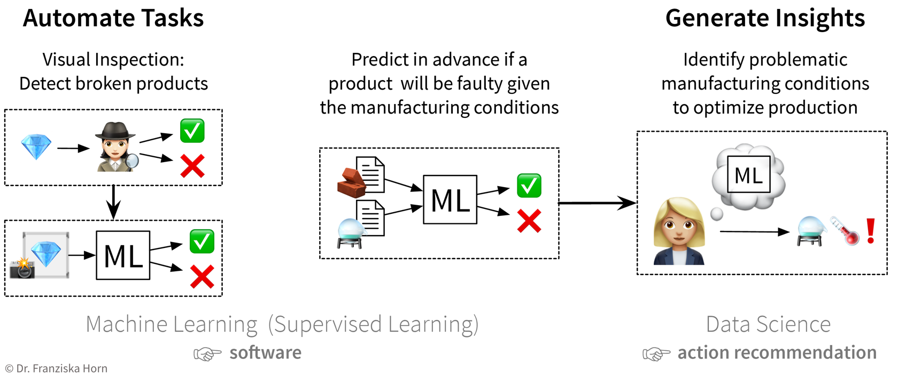
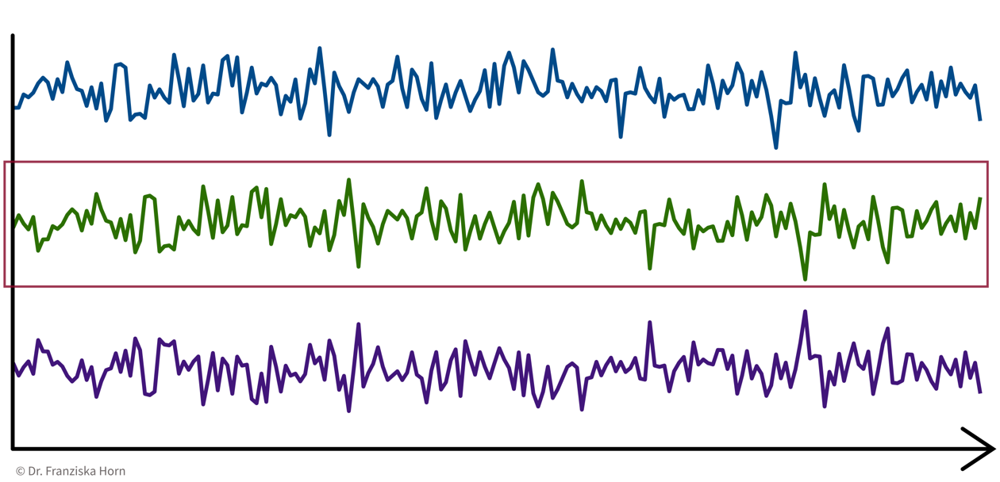
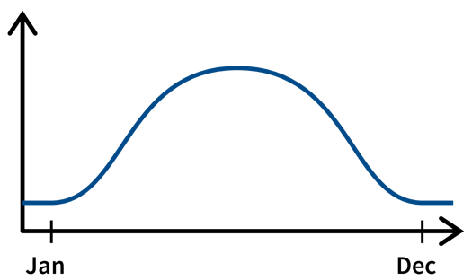
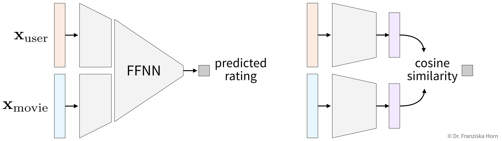

Why read this book?
There are a lot of machine learning (ML) resources out there, many of them either targeted at students or researchers and therefore rather heavy on the mathematical theory, or others in the form of tutorials, focusing on the concrete implementation and application of some ML algorithm to a specific problem. This book tries to find a middle ground between both the theoretical background (which I have studied in depth while completing my PhD in machine learning at the TU Berlin, Germany) and the practical applications, i.e., how to use these algorithms to actually solve different problems (as I have been doing in the last few years as an independent data science consultant for various firms). This book originated from my experience holding dozens of machine learning seminars and workshops in front of audiences with varying levels of technical and mathematical background.

Questions this book aims to answer:
-
Which problems can machine learning (ML) solve?
-
How does ML solve these problems, i.e., how do the algorithms work (in theory)?
-
How do you actually get this to work in practice and avoid common pitfalls?
This book does not explain the latest fancy neural network model that achieves state-of-the-art performance on some specific task. Rather it is meant to provide a general intuition for the ideas behind different machine learning algorithms to establish a solid framework that helps you better understand and integrate into a bigger picture what you later read about these specific approaches.
The Introduction and Conclusion are written for all audiences, i.e., readers generally interested in ML, who want to understand what is behind the hype and where ML can (or should not) be used. The other chapters are mainly targeted towards ML practitioners and assume the reader is familiar with elementary concepts of linear algebra (see also this overview on the mathematical notation used in the book).
While the book focuses on the general principles behind the different models, there are also references included to specific Python libraries (mostly scikit-learn) where the respective algorithms are implemented and tips for how to use them. To get an even deeper understanding of how to apply the different algorithms, I recommend that you try to solve some exercises covering different ML use cases.
This is still a draft version! Please write me an email or open an issue on GitHub if you have any suggestions for how this book could be improved!
In case you want to save the book as a PDF (or print it — but think about the environment!), you can also find a full-text version on a single page here.
If you have any questions or want to discuss your solutions to the exercises (or anything else data science related), feel free to schedule an individual coaching session with me!
Enjoy! :-)
- Acknowledgments
-
I would like to thank Antje Relitz for her feedback & contributions to the original workshop materials and Karin Zink for her help with some of the graphics (incl. the book cover).
- How to cite
@misc{horn2021mlpractitioner,
author = {Horn, Franziska},
title = {A Practitioner's Guide to Machine Learning},
year = {2021},
url = {https://franziskahorn.de/mlbook/},
}
Introduction
This chapter provides a general introduction into what machine learning (ML) actually is and where it can — or should not — be used.
ML is everywhere!
Machine learning is already used all around us to make our lives more convenient:
Face recognition
Face recognition technology is one of the earliest notable examples of machine learning and computer vision that can nowadays be found in every digital camera and smartphone. While the algorithms implemented in a camera application are fairly simple and only detect the presence of faces in general to make sure you look your best when the picture is taken, more sophisticated algorithms are also being used by governments and law enforcement in more and more countries to match a detected face to a known person in their biometric databases, for example, to identify criminals. So…smile!?

Object recognition (e.g., for self-driving cars)
Another example from the area of computer vision is object recognition or image segmentation in general. This is, for example, used in self-driving cars to make sure they are aware of street signs and pedestrians.

Analysis of medical images
The last example on image data comes from the application area of medicine: Below you see two images of retinas, i.e., photos taken of the back of someone’s eye, based on which it is possible to diagnose a common complication of diabetes that can result in blindness if left untreated.
The diagnostic algorithm that researchers at Google had developed to identify the markers of the disease in these images has reached the same level of accuracy as human experts in the field (Google had even assembled a team of top specialists to discuss the hardest cases again to get consistent labels for all images, which gave their model an additional performance boost). Since the equipment to take these images is fairly cheap, this means that with this ML model, expert diagnostic decisions can now be made available to those that might otherwise not have had the means to consult a top specialist.

Conversational agents (i.e. speech recognition…)
Leaving the field of computer vision, now an example from the area of natural language processing (NLP): Conversational agents, like Siri or Alexa, are waiting for commands in many people’s homes. While the answers they give are mostly still scripted by humans (as in the screenshot below), the real challenge is to understand what the person had actually said in the first place. Speech recognition, i.e., automatically transcribing spoken language into text, is a rather difficult problem, for example, since people speak with different accents and there can be additional background noises.

Recommender systems
Another area where ML is used are recommender systems, e.g., on e-commerce platforms and social media, which (ideally) provide the user with helpful search results and suggestions (and thereby make money for the respective companies), like in the screenshot below from Amazon or used by Netflix, YouTube & co to keep you glued to your screen. While sometimes the provided suggestions might help you find exactly what you were looking for, especially platforms with uncurated content such as YouTube have also been criticized for fostering, e.g., conspiracy theories through these personalized recommendations. Since this kind of content kept users especially engaged, it was recommended a lot and thereby drove the users further down some rabbit hole instead of also providing perspectives outside one’s own information bubble. But on the upside, the research on recommender systems has also sparked developments in other areas of science, such as methods that recommend drug molecules that fit to the proteins playing a key role in certain diseases to accelerate the search for a cure.


Better than humans: Alpha Go
In 2016, DeepMind, a startup subsequently acquired by Google, presented AlphaGo, the first computer program to beat a human Go master. This was a huge milestone for the AI research community, as Go, with a 19 x 19 playing field, is a lot more complex than chess (8 x 8 field and more restrictive movement patterns), and even the most optimistic AI researchers had not expected that a computer could win against a Go master before 2020. The algorithms used in AlphaGo are from the subfield of reinforcement learning, which we will discuss in more detail at the end of the book.

Protein folding - solving a 50-year-old challenge
Another major success story from DeepMind came in 2020, when they presented their AlphaFold model, which is now as accurate as traditional simulation models in estimating the 3D structure of proteins from their raw amino acid sequence. Knowing this 3D structure is important for drug development to determine which drug molecules can bind to a certain protein and therefore identify target structures that should be investigated further to find cures for diseases where the specific protein plays a key role. While exact simulation models existed for a long time to estimate a protein’s 3D structure, these were very slow and it often took several days to compute the folding for a single protein. With the new neural network models, the same computation can now be done in a matter of minutes or even seconds, thereby vastly accelerating drug development.

ML history: Why now?
Why is there such an uprise in ML now? Not only in our everyday lives has ML become omnipresent, but also the number of research paper published each year has increased exponentially over the last few years:

However, interestingly, this is not due to an abundance of groundbreaking theoretical accomplishments in the last few years (indicated as purple diamonds in the plot), but rather many of the algorithms used today were actually developed as far back as the late 50s / early 60s (e.g., the perceptron is the earliest version of a neural network model, which are behind all the examples shown above). Indeed, the most important neural network architectures, recurrent neural networks (RNN) and convolutional neural networks (CNN), which provide the foundation for state-of-the-art language and image processing respectively, were developed in the early 80s and 90s, but back then, we simply didn’t have the computational resources available to use them on anything more than small toy datasets.
Instead, the rise in ML publications correlates more closely with the number of transistors on CPUs (i.e., the regular processors in normal computers) and GPUs (graphics cards, which parallelize the kinds of computations needed to train neural network models efficiently):

Additionally, the release of many open source libraries, such as scikit-learn (for traditional ML models) and theano, tensorflow, and (py)torch (for the implementation of neural networks), has further facilitated the use of ML algorithms in many different fields.
| While these libraries somewhat democratize the use of ML, unfortunately, this also brings with it the downside that ML is now often applied by many who might not fully understand the theoretical underpinnings of these algorithms or the assumptions they make about the data that they are being applied to. This can, in the best case, result in models that don’t show the expected performance and subsequently maybe some (misplaced) disappointment in ML, and, in the worst case, lead to models that discriminate against certain parts of the population, e.g., credit scoring algorithms used by banks that systematically give women loans at higher interest rates than men due to biases encoded in the historic data used to train the models. We’ll discuss these kinds of issues in more detail in the chapter on avoiding common pitfalls. |
An additional factor driving the spread of ML besides compute power is the availability of (digital) data. Companies like Google, Amazon, and Facebook have had a head start here, as their business model was built around data from the start, but other companies are starting to catch up. While traditional ML models do not benefit much from all this available data, large neural network models with many degrees of freedom can now show their full potential by learning from basically all the texts and images posted every day on the Internet:

But were still very far from Artificial General Intelligence (AGI)!

An AGI is defined as a computer program that, just like a human, excels at a wide variety of different tasks at once and can learn to master new skills by itself.
However, what is used in practice instead is Artificial Narrow Intelligence (ANI): models explicitly programmed to solve a specific task(s), e.g., translate texts from one language to another, but they can’t generalize (on their own) to different tasks, i.e., the machine translation model will not tomorrow decide that it now also wants to recognize faces in images. Of course, one can pack several individual ANIs into one big program that solves multiple different tasks, but this collection of ANIs is still not able to learn (on its own) any new skills beyond these capabilities. Many AI researchers currently believe that we might never produce a true human-like AGI.
What is ML?
OK, so machine learning is already transforming all of our lives and you should probably know something about it. So now what exactly is ML?
First of all, ML is an area of research in the field of theoretical computer science, i.e., at the intersection of math/statistics and computer science:

More specifically, machine learning is an umbrella term for algorithms that recognize patterns and learn rules from data.
Simply speaking, an algorithm can be thought of as a specific strategy or recipe for solving a certain kind of problem. For example, there exist effective algorithms to find the shortest paths between two cities (e.g., what Google Maps uses when you ask for directions) or to solve scheduling problems (which task should be done first and which task after that to finish all tasks before their respective deadlines and satisfy dependencies between the tasks). Machine learning deals with the subset of algorithms that detect and make use of statistical regularities in a dataset to obtain specific results.
- ML algorithms = tools to generate value from data
-
Analogous to the tools used in a traditional production process to build something, you can think of ML algorithms as tools to generate value from data:

In order to successfully apply ML, you should ask yourself some important questions:
-
What could be valuable? (For example, this could be insights that you generate by analyzing the data or a software module, such as a face recognition algorithm, that adds a new feature to your product.)
-
What raw inputs are needed to create it? (For example, just like you can’t create a wooden chair using only fabric and metal or a few twigs you found in the forest, depending on what you want to achieve with ML, you also need the right data (quality & quantity) to apply the algorithms in the first place. This can be especially tricky since in most cases you can’t just buy the data you need (like you would buy wood at a hardware store), but you have to collect it yourself (i.e., grow your own trees), which can take some time.)
-
What type of ML algorithms can transform the raw input into the kind of valuable thing I want? (More on the different kinds of ML algorithms in the next sections.)
-
Do I (or my employees) possess the necessary skills and have enough compute power available to actually accomplish this in practice? (If not, keep on reading and rent some hours on a cloud compute cluster like those provided by Amazon Web Services.)
There exist many different ML algorithms — you can think of these as your ML toolbox:

- ML algorithms solve “input → output” problems
-
What all of these ML algorithms in your toolbox have in common, is that they solve “input → output” problems like these:

In the above examples, while a human (expert) typically could easily produce the correct output given the input (e.g., even a small child can recognize the cat in the first image), they have a hard time describing how they arrived at the correct output (e.g., how did you know that this is a cat? because of the pointy ears? the whiskers?). ML algorithms can instead learn such rules from the given samples.
How do machines “learn”?
The set of ML algorithms can be further subdivided based on how they work, i.e., how they learn from the data. This is inspired by how humans learn:

Analogously, machines can also learn with these three strategies:

| In most of the book, the terms “ML algorithm” and “ML model” will be used interchangeably. To be more precise, however, in general the algorithm processes the data and learns some parameter values and these parameter settings then define the final model. (For example, a linear regression model is defined by its coefficients (i.e., the model’s parameters), which are found by doing some stuff with the data (i.e., executing the steps outlined in the linear regression algorithm, which includes solving an optimization problem).) |
Goal: Describe the relationship between input(s) \(x\) and output \(y\) (with a model)

-
Select a model class: Assumption: relationship is linear
→ linear regression model: \(y = f(x) = b + w\cdot x\) -
Define an objective: Minimize error between true & predicted \(y\):
→ \(\min_{b,w} \sum_i (y_i - f(x_i))^2\) -
Find best model parameters given the data: i.e., solve the optimization problem defined in step 2
⇒ \(f(x) = -2.7 + 5.2x\)
When should you use ML?
While traditional software solutions are used to automate tasks that can be formulated as a fixed, predefined sequence of actions, executed according to some hard-coded rules (e.g., “a gate should open if an object passes through a photoelectric barrier and 20 seconds later the gate should close again”), machine learning can be used to automate “input → output” tasks for which it would otherwise be difficult to come up with such rules. For example, the quality control in a cookie factory is such an “input (cookie) → output (ok/defective)” task: While some broken cookies could be sorted out automatically by checking that each cookie weights around 15g, it would be difficult to formulate rules that reliably catch all possible defects. So either a human could watch the production line to recognize, e.g., over-baked cookies, or one could take pictures of the cookies and using them as input for a machine learning model to recognize the defective cookies:

To solve this problem with ML, first a large dataset needs to be compiled with photos of many good, but also all kinds of defective cookies, including the corresponding annotations, i.e., a label for each picture whether it displays a good or defective cookie. A ML algorithm can then learn to distinguish between good and defective cookies from these examples. What is important to note here is that the dataset only contains the information that a cookie is defective, but it is not necessary to say why the respective cookie is defective; these rules will be learned automatically from the data.
- Steps to identify a potential ML project
-
Create a process map: which steps are executed in your business processes (flow of materials & information) and what data is collected where? For example, in a production process where some of the produced parts are defective:

-
Identify parts of the process that could either be automated with ML (e.g., straightforward, repetitive tasks otherwise done by humans) or otherwise improved by analyzing data (e.g., to understand root causes of a problem, improve planning with what-if simulations, or optimize the use of resources):
While the final ML model that solves the input-output problem is just a piece of software, when a data scientist analyzes the results and interprets the model, she can generate insights that can be translated into action recommendations. -
Prioritize: which project will have a high impact, but at the same time also a good chance of success, i.e., should yield a high return on investment (ROI)? For example, using ML to automate a simple task is a comparatively low risk investment, but might cause some assembly-line workers to loose their (possibly quite boring) jobs. In contrast, identifying the root causes of why a production process produces 10% scrap could save millions, but it is not clear from the start that such an analysis will actually yield useful results, since the collected data on the process conditions might not be sufficient, i.e., might not contain all the needed information.
Solving problems with ML: Workflow
Solving “input → output” problems with ML requires three main steps:

The first (and arguably most important) step is to identify where machine learning can (and should) be used in the first place.
Once a suitable “input → output” problem as been identified, historic data needs to be gathered and the right ML algorithm needs to be selected and applied to obtain a working solution. This is what the next chapters are all about.
When the prototypical solution has been implemented and meets the required performance level, this solution then has to be deployed, i.e., integrated into the general workflow and infrastructure so that it can actually be used to improve the respective process in practice. There are generally two strategies for how to do this:
-
The ML model runs on the “edge”, i.e., on each individual machine where the respective data is collected and the output of the model is used in subsequent process steps. This is often the best strategy when the results need to be computed in real time and / or a continuous Internet connection can not be guaranteed, e.g., in self-driving cars. However, the downside of this is that, depending on the type of ML model, comparatively expensive computing equipment needs to be installed in each machine, e.g., GPUs for neural network models.
-
The ML model runs in the “cloud”, i.e., on a central server, e.g., in the form of a web application that receives the data from the individual machines, processes it, and sends back the results. This is often the more efficient solution if a response in near real time is sufficient for the respective use case, but can bring with it privacy concerns if user data is processed. One of the major benefits of this solution is that it is easier to update the ML model, for example, when more historic data becomes available or if the process changes and the model now has to deal with slightly different inputs (we’ll discuss this further in the section on messy data).
→ As these decisions heavily depend on your specific use case, they go beyond the scope of this book. Search online for “MLOps” to find out more about these topics and hire a machine learning or data engineer to set up the required infrastructure in your company.
- Machine Learning Workflow
-
Let’s look at the second main step, “devise a working solution”, in more detail. To solve a concrete problem using ML, you will generally follow this workflow:

Unfortunately, due to a lack of standardized data infrastructure in most companies, the sad truth is that usually (at least) about 90% of a Data Scientist’s time will be spent collecting, cleaning, and otherwise preprocessing the data to get it into a format where the ML algorithms can be applied:

While sometimes frustrating, the time spent cleaning and preprocessing your data is never wasted, as only with a solid data foundation the ML algorithms can achieve decent results.
ML with Python
The exercises accompanying this book are using the programming language Python.
- Why Python?
-
-
free & open source (unlike, e.g., MatLab)
-
easy; fast prototyping
-
general purpose language (unlike, e.g., R): easy to incorporate ML into regular applications or web apps
-
fast: many numerical operations are backed with C libraries
-
a lot of open source ML libraries with a very active community!!!
-
- How?
-
-
regular scripts (i.e., normal text files ending in
.py), especially useful for function definitions that you might reuse in different projects -
iPython shell: interactive console to execute code
-
Jupyter Notebooks (i.e., special files ending in
.ipynb): great for experimenting & sharing work with others (also works with other programming languages: Jupyter stands for Julia, Python, and R; you can even mix languages in the same notebook)
-
If you’re unfamiliar with Python, have a look at this Python tutorial specifically written to teach you the basics needed for the examples in this book. This cheat sheet additionally provides a summary of the most important steps when developing a machine learning solution, incl. code snippets using the libraries mentioned below.
Overview of Python Libraries for ML
The libraries are always imported with specific abbreviations (e.g., np or pd). It is highly recommended that you stick to these conventions and you will also see this in many code examples online (e.g., on StackOverflow).
|
import numpy as nppandas-
higher level data manipulation with data stored in a
DataFrametable similar to R; very useful for loading data, cleaning, and some exploration with different plots
import pandas as pdmatplotlib-
create plots (e.g.,
plt.plot(),plt.scatter(),plt.imshow())
import matplotlib.pyplot as pltplotly-
create interactive plots (e.g.,
px.parallel_coordinates())
import plotly.express as pxscikit-learn-
includes a lot of (non-deep learning) machine learning algorithms, preprocessing tools, and evaluation functions with a unified interface, i.e., all models (depending on their type) will have these
.fit(),.transform(), and/or.predict()methods, which makes it very easy to switch out models in the code by just changing the line where the model was initialized
# import the model class from the specific submodule
from sklearn.xxx import Model
from sklearn.metrics import accuracy_score
# initialize the model (usually you also set some parameters here)
model = Model()
# preprocessing/unsupervised learning methods:
model.fit(X) # only pass feature matrix X
X_transformed = model.transform(X) # e.g., the StandardScaler would return a scaled feature matrix
# supervised learning methods:
model.fit(X, y) # pass features and labels for training
y_pred = model.predict(X_test) # generate predictions for new points
# evaluate the model (the internal score function uses the model's prefered evaluation metric)
print("The model is this good:", model.score(X_test, y_test)) # .score() internally calls .predict()
print("Equivalently:", accuracy_score(y_test, y_pred)) import torch
(import keras)- Additional useful Natural Language Processing (NLP) libraries:
-
-
spacy(modern & fast NLP tools) -
nltk(traditional NLP tools) -
gensim(topic modeling) -
transformers(pre-trained neural network models for different tasks) -
beautifulsoup(parsing websites)
-
Data & Preprocessing
As we’ve seen, ML algorithms solve input-output tasks and to solve a ML problem, you first need to collect data. Preprocessing is the act of transforming raw data in such a way that ML algorithms can be applied:

For example, a production process, where you want to predict whether a produced part will be scrap given certain production conditions, would be a typical supervised learning problem. Here, the collected data for each produced part should include the process conditions under which it was produced, as well as the outcome (i.e., product was okay or scrap):


- Structured vs. unstructured data
-
Data can come in various forms and while some data types might require additional preprocessing steps, in principle ML algorithms can be used with all kinds of data.
 The main distinction that is made when characterizing data is between structured data, which is any dataset that contains individual variables that represent unique quantities, and unstructured data, which can not be subdivided into meaningful variables, e.g., in images “first pixel from the left” or in texts “10th word in the second paragraph” is not what you would call a variable, while “size in square meters” and “number of bedrooms” would be useful quantities to describe an apartment. Structured data is often heterogeneous, since the different variables in a dataset typically stand for very different things (e.g., when working with sensor data you normally would not have a dataset that only contains temperature measurements, but additionally it might contain, e.g., pressure and flow values, which have different units and might be on very different scales). Unstructured data, on the other hand, is homogeneous (i.e., there is no qualitative difference between the 10th and the 100th pixel in an image).
The main distinction that is made when characterizing data is between structured data, which is any dataset that contains individual variables that represent unique quantities, and unstructured data, which can not be subdivided into meaningful variables, e.g., in images “first pixel from the left” or in texts “10th word in the second paragraph” is not what you would call a variable, while “size in square meters” and “number of bedrooms” would be useful quantities to describe an apartment. Structured data is often heterogeneous, since the different variables in a dataset typically stand for very different things (e.g., when working with sensor data you normally would not have a dataset that only contains temperature measurements, but additionally it might contain, e.g., pressure and flow values, which have different units and might be on very different scales). Unstructured data, on the other hand, is homogeneous (i.e., there is no qualitative difference between the 10th and the 100th pixel in an image).
What constitutes 1 data point?
It’s always important to be really clear about what 1 data point actually is, i.e., what the inputs look like and what you want back as a result from the model for each sample / observation. Think of this in terms of how you plan to integrate the ML model with the rest of your workflow: what is the data that is produced in the previous step and flows into the ML part, and what do you need as an output from the model for the following step?
Even given the same raw data, depending on what you want to do, the definition of ‘1 data point’ might be quite different. For example, when dealing with time series data, the raw data might always be in the form ‘n time points with measurements from d sensors’, but depending on the type of question you are trying to answer, the actual feature matrix can look quite different:
- 1 Data Point = 1 Time Point
-
e.g., anomaly detection (→ determine for each time point if everything is normal or if there is something strange going on):

→ \(X\): n time points \(\times\) d sensors, i.e., n data points represented as d-dimensional feature vectors
- 1 Data Point = 1 Time Series
-
e.g., cluster sensors (→ see if some sensors measure related things):
→ \(X\): d sensors \(\times\) n time points, i.e., d data points represented as n-dimensional feature vectors
- 1 Data Point = 1 Time Interval
-
e.g., classify time segments (→ products are being produced one after another, some take longer to produce than others, and the task is to predict whether a product produced during one time window at the end meets the quality standards, i.e., we’re not interested in the process over time per se, but instead regard each produced product (and therefore each interval) as an independent data point):
→ Data points always need to be represented as fixed-length feature vectors, where each dimension stands for a specific input variable. Since the intervals here have different lengths, we can’t just represent one product as the concatenation of all the sensor measurements collected during its production time interval, since these vectors would not be comparable for the different products. Instead, you could compute features for each time segment by aggregating the sensor measurements over the interval (e.g., min, max, mean, slope, …)
→ \(X\): k intervals \(\times\) q features (derived from the d sensors), i.e., k data points represented as q-dimensional feature vectors
Feature Extraction
Machine learning algorithms only work with numbers. If your data does not consist of numerical values (e.g., text documents) or these numerical values should not be interpreted as such (e.g., sports players have numbers on their jerseys, but these numbers don’t mean anything in a numeric sense (e.g., higher numbers don’t mean the person scored more goals), they are merely IDs), then this data needs to be transformed accordingly, i.e., numerical features need to be extracted from the original data. (Statisticians distinguish here between nominal, ordinal, interval, and ratio data, but for simplicity we lump the first two together as categorical data, while the other two are considered meaningful numerical values.)
Transforming raw data into meaningful numerical features:
-
categorical features: 1-hot encoding (= creating dummy variables that enable the model to introduce a different offset for each category)
For example, we might have 4 product categoriescircle,triangle,square, andpentagon, where each data point (representing a product) falls into exactly one of these categories. This means, we could create four features,is_circle,is_triangle,is_square, andis_pentagon, and indicate a data point’s product category using a binary flag, i.e., a value of 1 at the index of the true category and 0 everywhere else:
e.g., product category:triangle⇒[0, 1, 0, 0]from sklearn.preprocessing import OneHotEncoder -
text documents: Bag-of-Words (BOW) TF-IDF features:
Represent a document as the weighted counts of the words occurring in the text:-
Term Frequency (TF): how often does this word occur in the current text document
-
Inverse Document Frequency (IDF): a weight to capture how significant this word is. This is computed by comparing the total number of documents in the dataset to the number of documents in which the word occurs. The IDF weight thereby reduces the overall influence of words that occur in almost all documents (e.g., so-called stopwords like ‘and’, ‘the’, ‘a’, …)

→ First, the whole corpus (= a dataset consisting of text documents) is processed once to determine the overall vocabulary (i.e., the unique words occurring in all documents that then make up the dimensionality of the BOW feature vector) and to compute the IDF weights for all words. Then each individual document is processed to compute the final TF-IDF vector. (Please note that in the picture above, the feature vector is shown as a column vector, but later each document will be one data point, i.e., one row in the feature matrix \(X\), while the TF-IDF values for the individual words are the features in the columns.)
from sklearn.feature_extraction.text import TfidfVectorizer- Disadvantages of TF-IDF vectors
-
-
similarity between individual words (e.g., synonyms) is not captured, since each word has its own distinct dimension in the feature vector and is therefore equally far away from all other words
-
word order is ignored (this is also where the name “bag of words” comes from, i.e., imagine all the words from a document are thrown into a bag and shook and then you just check how often each word occurred in the text)
-
-
Feature Engineering & Transformations
Often it is very helpful to not just use your original features as is, but to compute new, more informative features from them (what is also called feature engineering). Additionally, you should also check the distributions of the individual variables (e.g., by plotting a histogram) to see if the features are approximately normally distributed (which is an assumption of most ML models).
- Generate additional features (i.e., feature engineering)
-
-
In general: e.g., product/ratio of 2 variables (e.g., compute a new feature that contains the ratio of the temperature inside your machine to the temperature outside in the room)
→autofeatlibrary (Disclaimer: written by yours truly.) -
Relational data: e.g., aggregations across tables (for example, in a database you might have one table that contains all your customers and another table that contains all transactions and you want to compute a feature that shows the total volume of sales for each customer, i.e., the sum of the transactions grouped by customers)
→featuretoolslibrary -
Time series data: e.g., min/max/average over time intervals
→tsfreshlibrary
⇒ Domain knowledge is invaluable here — instead of blindly computing hundreds of additional features, ask a domain expert which derived values she thinks might be the most helpful for the problem you’re trying to solve!
-
- Aim for normally/uniformly distributed features
-
especially important for heterogeneous data (e.g., different kinds of sensors with different scales, like a temperature between 100 and 500 degrees and a pressure sensor that measures values between 1.1 and 1.8 bar → the ML model only sees the values and does not know about the different units)
-
for each feature: subtract mean & divide by standard deviation (i.e., transform arbitrary Gaussian distribution into a normal distribution)
from sklearn.preprocessing import StandardScaler -
for each feature: scale between 0 and 1
from sklearn.preprocessing import MinMaxScaler -
map to Gaussian distribution (e.g., take log/sqrt if the feature shows a skewed distribution with a few extremely large values)
from sklearn.preprocessing import PowerTransformer
-
Not using (approximately) normally distributed data is a very common mistake!


2D visualization created with t-SNE (→ see section on dimensionality reduction) of the same dataset (each dot is one data point where the color denotes the point’s class), first using the original feature vectors, then on standardized data, and lastly after applying a power transformation.
Computing Similarities
Many ML algorithms rely on similarities or distances between data points, computed with measures such as:
-
Cosine similarity (e.g., when working with text data)
-
Similarity coefficients (e.g., Jaccard index)
-
… and many more
from sklearn.metrics.pairwise import ...| Which feature should have how much influence on the similarity between points? → Domain knowledge! |
-
⇒ scale / normalize heterogeneous data (e.g., a pressure difference between 1.1 and 1.8 bar might be more dramatic in the process than a temperature difference between 200 and 250 degrees, but if you compute the distance using the unscaled values, the difference in temperature would completely overshadow the difference in pressure)
-
⇒ exclude redundant / strongly correlated features (otherwise they count twice towards the distance)
- Example: Computing similarities between texts (represented as TF-IDF vectors) with the cosine similarity
-
Scalar product (→
linear_kernel) of length normalized TF-IDF vectors:\[sim(\mathbf{x}_i, \mathbf{x}_j) = \frac{\mathbf{x}_i^\top \mathbf{x}_j}{\|\mathbf{x}_i\| \|\mathbf{x}_j\|} \quad \in [-1, 1]\]i.e., the cosine of the angle between the length-normalized vectors:

→ similarity score is between [0, 1] for TF-IDF vectors, since all entries in the vectors are positive
Garbage in, garbage out!
Remember: data is your raw material when producing something valuable with ML. If the quality or quantity of the data is insufficient, you are facing a “garbage in, garbage out” scenario and no matter what kind of fancy ML algorithm you might try, you wont get a satisfactory result (actually, the fancier the algorithm (e.g., deep learning), the more data you need).
Below you find a summary of some common risks associated with data that can make it complicated or even impossible to apply ML:
| If you can, observe how the data is being collected. As in: actually physically stand there and watch how someone enters the values in some program or how the machine operates as the sensors measure something. You will probably notice some things that can be optimized in the data collection process directly, which might save you lots of preprocessing work in the future. |
- Best Practice: Data Catalog
-
For each variable (in structured data) you should always have information available like:
-
Name of the variable
-
Description
-
Units
-
Data type (e.g., numerical or categorical values)
-
Date since when this variable is being recorded
-
Normal/expected range of values (→ “if this variable is below this threshold, then the machine is off and the data points can be ignored”)
-
How missing values are recorded (i.e., are they actually recorded as missing values or substituted by some unrealistic value instead, which can happen since some sensors are not able to send a signal for NaN directly or the database might not allow the field to be empty)
-
Notes on anything else you should be aware of, e.g., a sensor malfunctioning during a certain period of time or some other glitch that resulted in incorrect data (which can sometimes be difficult to spot, for example, if someone instead manually entered or copy & pasted values from somewhere, which might not look conspicuous at first glance)
-
- With (big) data comes great responsibility!
-
Some data might not seem very valuable to you, but might still be a huge asset for others (i.e., with a different use case)!
 A fitness tracker startup thought it would be a cool idea to publish popular jogging routes based on the data they’ve collected from their users. However, since many US soldiers also happened to use the tracker and frequently jogged around their army bases, this startup thereby accidentally outed a secret army base in Afghanistan, which appeared as a bright spot on their interactive map in an area where they otherwise had only few users. So even if your data looks harmless at first glance, please do think about what could go wrong in case you publish it (even in an aggregated, anonymized form)!
A fitness tracker startup thought it would be a cool idea to publish popular jogging routes based on the data they’ve collected from their users. However, since many US soldiers also happened to use the tracker and frequently jogged around their army bases, this startup thereby accidentally outed a secret army base in Afghanistan, which appeared as a bright spot on their interactive map in an area where they otherwise had only few users. So even if your data looks harmless at first glance, please do think about what could go wrong in case you publish it (even in an aggregated, anonymized form)!
ML Solutions: Overview
Now that you’ve seen how to preprocess some raw data to get it in the right format to apply ML, let’s move on to the fun part:

The inputs that the ML algorithms operate on can come in many forms, but your goal, i.e., the desired outputs, determines the type of algorithm you should use for the task:

- Unsupervised & Supervised Learning
-
Let’s start with a more detailed look at the different unsupervised & supervised learning algorithms and what they can help you with:

- Same dataset, different use cases
-
To illustrate the usefulness of the 5 different types of unsupervised and supervised learning algorithms, lets apply them to this small example dataset:
m2 # Bedr # Bath Renovated … Price Sold 125
4
2
2000
…
500k
1
75
2
1
1990
…
350k
1
150
6
2
2010
…
750k
0
…
…
…
…
…
…
…
35
5
2
1999
…
620k
0
65
3
1
2015
…
220k
1
100
3
1
2003
…
450k
0
This is a small toy example dataset with structured data about different apartments, which someone might have gathered from a real estate website, i.e., the size of the apartment in square meters, the number of bedrooms, the number of bathrooms, the year it was last renovated, and finally the price of the listing as well as whether it was sold for this price (1) or not (0).
- Example Unsupervised Learning: Dimensionality Reduction
-
Goal: Visualize the dataset

- Example Unsupervised Learning: Anomaly Detection
-
Goal: Find outliers in the dataset

- Example Unsupervised Learning: Clustering
-
Goal: Find naturally occurring groups in the dataset

- Example Supervised Learning: Classification
-
Goal: Predict a discrete value for each data point

- Example Supervised Learning: Regression
-
Goal: Predict a continuous value for each data point

Some other examples of input → output problems and what type of ML algorithm can be used to solve them:
| Input \(X\) | Output \(Y\) | ML Algorithm Category |
|---|---|---|
sensor measurements |
everything normal? |
anomaly detection |
questionnaire answers |
customer segmentation |
clustering |
past usage of a machine |
remaining lifetime |
regression |
spam (yes/no) |
classification (binary) |
|
image |
which animal? |
classification (multi-class) |
users purchases |
products to show |
recommender systems |
search query |
relevant documents |
information retrieval |
audio |
text |
speech recognition |
text in English |
text in French |
machine translation |
Taxonomy of ML problems & solutions
Machine learning algorithms can be used to solve a wide variety of problems involving different kinds of inputs data. But different problem types require different approaches and come with their own unique set of challenges.
The following is by no means an exhaustive list of all the different areas where machine learning is applied, but should cover the most important cases where ML currently adds value and why might it fail. (Please note, this summary contains some terms that will be explained in the following chapters, so you might want to come back to this later.)
Unsupervised Learning
The first algorithms we look at in more detail are from the area of unsupervised learning:

While the different subfields of unsupervised learning all include lots of algorithms that can be used for the respective purpose, we’ll always just examine a few example algorithms with different underlying ideas in more detail. But feel free to, e.g., have a look at the sklearn user guide for more information about other models.
Dimensionality Reduction
The first subfield of unsupervised learning that we look at is dimensionality reduction:

- Goal
-
reduce the number of features without loosing relevant information
- Advantages
-
-
reduced data needs less memory (usually not that important anymore today)
-
noise reduction (by focusing on the most relevant signals)
-
create a visualization of the dataset (what we will mostly be using these algorithms for)
-
- Example: Embed images of hand written digits in 2 dimensions
-
 Our dataset in this small example consists of a set of 8 x 8 pixel images showing handwritten digits (i.e., each data point can be represented as a 64-dimensional input feature vector containing the gray-scale pixel values). Usually, this dataset is used for classification, i.e., where a model should predict which number is shown on the image. We instead only want to get a better overview of the dataset, i.e., our goal is to reduce the dimensionality of this dataset to 2 coordinates, which we can then use to visualize all samples in a 2D overview map. Please note that the algorithms only use the original image pixel values as input to compute the 2D coordinates, but afterwards we additionally use the labels of the images (i.e., the digit shown in the image) to give the dots in the plot some color to better interpret the results.
Our dataset in this small example consists of a set of 8 x 8 pixel images showing handwritten digits (i.e., each data point can be represented as a 64-dimensional input feature vector containing the gray-scale pixel values). Usually, this dataset is used for classification, i.e., where a model should predict which number is shown on the image. We instead only want to get a better overview of the dataset, i.e., our goal is to reduce the dimensionality of this dataset to 2 coordinates, which we can then use to visualize all samples in a 2D overview map. Please note that the algorithms only use the original image pixel values as input to compute the 2D coordinates, but afterwards we additionally use the labels of the images (i.e., the digit shown in the image) to give the dots in the plot some color to better interpret the results.

The two plots show the results, i.e., the 2-dimensional representation of the dataset, created with two different dimensionality reduction algorithms, PCA and t-SNE. Each point or thumbnail in the plot represents one data point (i.e., one image), where the colors, numbers, and example images were added in the graphic afterward to make it easier to interpret what is shown here. There is no right or wrong way to represent the data in 2D (it’s an unsupervised learning problem, which by definition has no ground truth answer), but the algorithms arrive at two very different solutions, since they follow different strategies and have a different definition of what it means to preserve the relevant information. While PCA created a plot that preserves the global relationship between the samples, t-SNE arranged the samples in localized clusters. The remarkable thing here is that these methods did not know about the fact that the images displayed different, distinct digits (i.e., they did not use the label information), yet t-SNE grouped images showing the same number closer together. From such a plot we can already see that if we were to solve the classification problem here (i.e., predict which digit is shown in an image), this task should be fairly easy, since even an unsupervised learning algorithm that did not use the label information showed that images displaying the same number are very similar to each other and can easily be distinguished from images showing different numbers (or conversely, if our classification model performed very poorly on this task, we would know that we have a bug somewhere, since apparently the relevant information is present in the features to solve this task). Please note that even though t-SNE seems to create clusters here, this is not a clustering algorithm. As a dimensionality reduction algorithm, t-SNE produces a set of new 2D coordinates for our samples and when plotting the samples at these coordinates, they happen to be arranged in clusters. However, a clustering algorithm instead outputs cluster indices, that state which samples were assigned to the same group (which could then be used to color the points in the 2D coordinate plot).
Principal Component Analysis (PCA)
- Useful for
-
general dimensionality reduction & noise reduction (→ the transformed data is then sometimes used as input to other algorithms instead of the original features)
- Main idea
-
compute the eigendecomposition of the dataset’s covariance matrix (a symmetric matrix of size \(d \times d\) (with d = number of original input features), which states how strongly any two features co-vary, i.e., how related they are, similar to the linear correlation between two features). By computing the eigenvalues and -vectors of this matrix, the main directions of variance are identified as the new principle components (which can be expressed as linear combinations of the original features) and we can now reorient the data along these new axis (have a look at this video for a more detailed explanation):
Here the original data only has two features anyways, so a dimensionality reduction does not make much sense, but it nicely illustrates how the algorithm works: the main direction of variance is selected as the first new dimension, while the direction with the next strongest variation (orthogonal to the first) is the second new dimension, also called principle components. The data can then be rotated accordingly, such that the amount of captured variation in the data (i.e., the information content and also the eigenvalue associated with this principle component) decreases from the first to the last of these new dimensions.
from sklearn.decomposition import PCAImportant Parameters:
-
→
n_components: new dimensionality of data (this can be as many as the original features (or the rank of the feature matrix))
- Pros
-
-
linear algebra based: global optima (i.e., when you compute PCA multiple times on the same dataset you’ll always get the same solution)
-
know how much information is retained (check the attributes
explained_variance_ratio_orlambda_):
the principle components are always ordered by the magnitude of their corresponding eigenvalues (largest first);
for k components with eigenvalues \(\lambda_i\), the amount of variation that is preserved is: \(\frac{\sum_{i=1}^k \lambda_i}{\sum_{i=1}^d \lambda_i}\)
(if the intrinsic dimensionality of the dataset is lower than the original number features, e.g., because some features were strongly correlated, then the last few eigenvalues will be zeros; you can also plot the eigenvalue spectrum, i.e., the eigenvalues ordered by their magnitude, to see how many dimensions you might want to keep, i.e., when this curve starts to flatten out)
-
- Careful
-
-
computationally expensive for many (> 10k) features
→ if you have less data points than features, consider using Kernel PCA instead (this computes the eigendecomposition of a similarity matrix, which is \(n \times n\) (with n = number of data points), i.e., when n < d this matrix will be smaller than the covariance matrix and therefore computing its eigendecomposition will be faster) -
outliers can heavily skew the results (because a few points away from the center can introduce a large variance in that direction)
-
t-SNE
- Useful for
-
visualizing data in 2D (but please do not use the transformed data as input for other algorithms)
- Main idea
-
randomly initialize the points in 2D and move them around until their distances in 2D match the original distances in the high dimensional input space, i.e., until the points that were similar to each other in the original high dimensional space are located close together in the new 2D map of the dataset (→ have a look at the animations in this great blog article to see t-SNE in action)
from sklearn.manifold import TSNEImportant Parameters:
-
→
perplexity: roughly: how many nearest neighbors a point is expected to have (see also the corresponding section in the blog article linked above for an example; what an appropriate value for this parameters is depends on the size and diversity of your dataset, e.g., if you have a dataset of 1000 images with 10 classes, then a perplexity of 5 might be a reasonable choice, while in a dataset with 1 million samples, 500 could be a good value (the original paper says values up to 50 work well, but in 2003 “big data” also wasn’t a buzzword yet ;-)) -
→
metric: how to compute the distances in the original high dimensional input space (which tells you which points should be close together in the 2D map)
- Pros
-
-
very nice visualizations
-
- Careful
-
-
can get stuck in a local optimum (e.g., some points trapped between clusters)
-
selection of distance metric for heterogeneous data (→ normalize!)
-
Outlier / Anomaly Detection
Next up on our list of ML tools is anomaly or outlier detection:

- Useful for
-
-
detecting anomalies for monitoring purposes (e.g., machine failures or fraudulent credit card transactions)
-
removing outliers from the dataset to improve the performance of other algorithms
-
When trying to remove outliers or detect anomalies, there are many things that need to be considered:
-
Does the dataset consist of independent data points or time series data with dependencies?
-
Are you looking for outliers in individual dimensions (e.g., in time series data you might not see a failure in all sensors simultaneously, but only one sensor might act up spontaneously (i.e., show a value very different from the previous time point), which would be enough to rule this time point an anomaly irrespective of the values of the other sensors) or is it necessary to consider multidimensional outlier patterns (e.g., for independent data points individual feature values might not seem anomalous by themselves, only when considered in combination with the data point’s other feature values (e.g., a \(35 m^2\) apartment could be a nice studio, but if this apartment is also supposed to have 5 bedrooms then something is off))?
-
Are you expecting a few individual outliers or clusters of outliers (the latter is especially common in time series data, where, e.g., a machine might experience an issue for several minutes or even hours before the signals look normal again)? Clusters of outliers are more tricky to detect, especially if the data also contains other ‘legitimate’ clusters of normal points. Domain expertise is key here!
-
Do you have any labels available? E.g., while you might not know what the different kinds of (future) anomalies could look like, maybe you do know what normal data points look like, which is important information that you can make use of by checking how far new points deviate from these normal points (also called novelty detection).
| Know your data - are missing values marked as NaNs (= "Not a Number")? |
| While removing outlier points from a dataset is often a necessary cleaning step, e.g., to obtain better prediction models, you should always be able to explain why you removed these points, as they could also be interesting edge cases. If possible, you should always remove as many outliers as possible with manually crafted rules (e.g., “when this sensor is 0, the machine is off and the points can be disregarded”), especially when the dataset contains clusters of outliers, which are also more difficult to detect with data-driven methods. |
| Please note that some of the data points that will be encountered in the future might be outliers as well, i.e., before applying a prediction model to new test points in production, these should be screened for outliers as well, as the predictions for these points would not be accurate if the model was trained on a dataset with outliers removed. |
\(\gamma\)-index
Harmeling, Stefan, et al. “From outliers to prototypes: ordering data.” Neurocomputing 69.13-15 (2006): 1608-1618.
- Main idea
-
compute the average distance of a point to its k nearest neighbors;
→ points with a large average distance are likely to be outliers
(⇒ set a threshold at what average distance the point is considered an outlier)

import numpy as np
from sklearn.metrics import pairwise_distances
def gammaidx(X, k):
"""
Inputs:
- X [np.array]: n samples x d features input matrix
- k [int]: number of nearest neighbors to consider
Returns:
- gamma_index [np.array]: vector of length n with gamma index for each sample
"""
# compute n x n Euclidean distance matrix
D = pairwise_distances(X, metric='euclidean')
# sort the entries of each row, such that the 1st column is 0 (distance of point to itself),
# the following columns are distances to the closest nearest neighbors (i.e., smallest values first)
Ds = np.sort(D, axis=1)
# compute mean distance to the k nearest neighbors of every point
gamma_index = np.mean(Ds[:, 1:(k+1)], axis=1)
return gamma_index
# or more efficiantly with the NearestNeighbors class
from sklearn.neighbors import NearestNeighbors
def gammaidx_fast(X, k):
"""
Inputs:
- X [np.array]: n samples x d features input matrix
- k [int]: number of nearest neighbors to consider
Returns:
- gamma_index [np.array]: vector of length n with gamma index for each sample
"""
# initialize and fit nearest neighbors search
nn = NearestNeighbors(n_neighbors=k).fit(X)
# compute mean distance to the k nearest neighbors of every point (ignoring the point itself)
# (nn.kneighbors returns a tuple of distances and indices of nearest neighbors)
gamma_index = np.mean(nn.kneighbors()[0], axis=1) # for new points: nn.kneighbors(X_test)
return gamma_index- Pros
-
-
conceptually very simple and easy to interpret
-
- Careful
-
-
computationally expensive for large datasets (distance matrix: \(\mathcal{O}(n^2)\)) → compute distances to a random subsample of the dataset or to a smaller set of known non-anomalous points instead
-
normalize heterogeneous datasets before computing distances!
-
know your data: does the dataset contain larger clusters of outliers? → k needs to be large enough such that a tight cluster of outliers is not mistaken as prototypical data points
-
| Extension for time series data: don’t identify the k nearest neighbors of a sample based on the distance of the data points in the feature space, but take the neighboring time points instead. |
Clustering
The last category of unsupervised learning algorithms is clustering:

- Useful for
-
identifying naturally occurring groups in the data (e.g., for customer segmentation)
There exist quite a lot of different clustering algorithms and we’ll only present two with different ideas here. If you look at the linked sklearn examples, please note that even though other clustering algorithms might seem to perform very well on fancy toy datasets, data in reality is seldom arranged in two concentric circles, and on real-world datasets the k-means clustering algorithm is often a robust choice.
k-means clustering
- Main idea
-
-
randomly place k cluster centers (where k is a hyperparameter set by the user);
-
assign each data point to its closest cluster center;
-
update cluster centers as mean of the assigned data points;
-
repeat 2-3 until convergence.
 Please note that even though in these pictures the data is depicted in 2D, of course all these methods also work in high dimensional spaces!
Please note that even though in these pictures the data is depicted in 2D, of course all these methods also work in high dimensional spaces! -
from sklearn.cluster import KMeansImportant Parameters:
-
→
n_clusters: how many clusters (k) you want to find
- Pros
-
-
fast
-
usually good results on real world datasets
-
- Careful
-
-
depends on random initialization (→ local optimum, but usually not problematic in practice due to multiple restarts)
-
assumes spherical clusters
-
need to guess the number of clusters (but can be done with a heuristic)
-
DBSCAN
- Main idea
-
find ‘core samples’ in dense areas of the data and then expand clusters by iteratively including points with a distance <
eps
from sklearn.cluster import DBSCANImportant Parameters:
-
→
eps: maximum neighborhood distance of two samples -
→
metric: how to compute the distance in the input feature space
- Pros
-
-
allows for noise (→ can also use the algorithm to detect outliers)
-
no need to guess the number of clusters
-
- Careful
-
-
very dependent on distance measure: may be tricky to get good results for heterogeneous data even after normalization (but: try on text data)
-
→ also check out the hdbscan library!
Supervised Learning Basics
Now that you’ve gotten to know different unsupervised learning algorithms, we move on to supervised learning:

- Supervised learning in a nutshell
-
 Before you start, you need to be very clear on what you want, i.e., what should be predicted, how will predicting this variable help you achieve your overall goals and create value, and how do you measure success (i.e., what is the Key Performance Indicator (KPI) of your process)? Then, you need to collect data — and since we’re doing supervised learning now, this needs to be labeled data (with the labels corresponding to the target variable that you want to predict). Next, you can "learn" (or "train" or "fit") a model on this data and finally use it to generate predictions for new data points.
Before you start, you need to be very clear on what you want, i.e., what should be predicted, how will predicting this variable help you achieve your overall goals and create value, and how do you measure success (i.e., what is the Key Performance Indicator (KPI) of your process)? Then, you need to collect data — and since we’re doing supervised learning now, this needs to be labeled data (with the labels corresponding to the target variable that you want to predict). Next, you can "learn" (or "train" or "fit") a model on this data and finally use it to generate predictions for new data points.
Dont stop there! (Depth of analytics revisited):

Supervised learning in a nutshell more formally, with scikit-learn:
.fit(X_train, y_train) method on the model to learn the internal model parameters by minimizing some model-specific objective function on the training data. Now the model is ready to generate predictions for new data points, i.e., by calling .predict(X_test), you obtain the predicted values \(\mathbf{\hat{y}}\) for the test points. Finally, to get an estimate of how useful the model will be in practice, we evaluate it by comparing the predicted target values of the test set to the corresponding true labels.In the following sections, we introduce the different approaches to supervised learning and explain when to use which kind of model, then discuss how to evaluate and select a supervised learning model.
Different types of models
The most important task of a data scientist is to select an appropriate model (and its hyperparameters) for solving a problem.
Problem type: Regression vs. Classification
The type of the target variable that you need to predict determines whether you are dealing with a regression or classification problem.
- Regression
-
prediction of continuous value(s) (e.g., price, number of users, etc.)
- Classification
-
prediction of discrete values, either
-
binary (e.g., product will be faulty: yes/no) or
-
multi-class (e.g., picture displays cat/dog/house/car/…)
→ many classification models actually predict probabilities for the different classes (i.e., a score between 0 and 1 for each class), and the final class label is then chosen by applying a threshold on this score (typically 0.5 for binary classification problems) or by taking the outcome with the highest score (in multi-class problems)
-
⇒ Whether you are dealing with a regression or classification problem is important to know and has implications for your overall workflow, e.g., how you should define & measure success. However, the actual models that you can use to solve these problems are very similar, e.g., almost all sklearn models exist in either a Regressor or Classifier variant to generate the appropriate output for the respective problem type.
Problem complexity: linear or non-linear
In accordance with the product warranty example described above, we now illustrate what it means for a problem to be linear or non-linear on a small toy dataset:
As illustrated in the above examples, whether your problem can be solved by a simple linear model (i.e., a single straight line or hyperplane) or requires a more complex non-linear model to adequately describe the relationship between the input features and target variable entirely depends on the given data. This also means that sometimes you might just need to install an additional sensor to measure some feature that is linearly related to your target variable or do some feature engineering to then be able to get satisfactory results with a linear model, i.e., sometimes, with the right preprocessing, a non-linear problem can also be transformed into a linear one.
Algorithmic approaches: Features-based vs. similarity-based models
Finally, lets look at how the different models work and arrive at their predictions. This is what really distinguishes the various algorithms, whereas we have already established that there always exists a regression and a classification variant of each model and some models are inherently expressive enough that they can be used to describe non-linear relationships in the data, while others will only yield satisfactory results if there exists a linear relationship between the available input features and the target variable.
While features-based models learn some parameters or rules that are applied directly to a new data point’s input feature vector \(\mathbf{x} \in \mathbb{R}^d\), for the similarity-based models, first a vector \(\mathbf{s} \in \mathbb{R}^n\) with the similarities of the new data point to the training data points is computed and the model then operates on this vector instead of the original input features:

| This distinction between algorithmic approaches is not only interesting from a theoretical point of view, but even more so from a user perspective: when using a similarity-based algorithm, you have to be very careful which features you include when computing the similarities, make sure that these features are appropriately scaled, and in general think about which similarity measure is appropriate for your data (e.g., you could capture domain knowledge by using a custom similarity function specifically tailored to your problem). When using a features-based model, on the other hand, the model itself can learn which features are most predictive by assigning individual weights to each input feature and therefore possibly ignore irrelevant features or account for variations in heterogeneous data (of course, domain knowledge is still beneficial here, as it can, for example, guide you when engineering additional, more informative input features). |
Okay, now, when should you use which approach?
- Features-based models
-
-
number of features should be less than the number of samples!
-
good for heterogeneous data due to individual feature weights (although scaling is usually still a good idea)
-
easier to interpret (since they describe a direct relationship between input features & target)
-
- Similarity-based models
-
-
non-linear models for small datasets
-
need appropriate similarity function → domain knowledge! (especially for heterogeneous data)
-

Model Evaluation
Since in supervised learning problems we know the ground truth, we can now objectively evaluate different models and benchmark them against each other.
Evaluation Metrics
First 3 evaluation metrics for regression problems, the mean absolute error, mean squared error, and \(R^2\).
- Mean absolute error (MAE)
-
 This is probably the most straightforward regression error metric and additionally easy to interpret since the error is given in the same units of measurement as the target variable (e.g., if you’re predicting a price in euros, you would know exactly by how many euros the model is off on average).
This is probably the most straightforward regression error metric and additionally easy to interpret since the error is given in the same units of measurement as the target variable (e.g., if you’re predicting a price in euros, you would know exactly by how many euros the model is off on average).
from sklearn.metrics import mean_absolute_error- Mean squared error (MSE)
-
 Since this regression error metric is differentiable, it is often used internally when optimizing the parameters of a model (e.g., in linear regression). When reporting the final error of a model, one often takes the square root of the result, i.e., instead reports the root mean squared error (RMSE), since this is again in the same units as the original target variable.
Since this regression error metric is differentiable, it is often used internally when optimizing the parameters of a model (e.g., in linear regression). When reporting the final error of a model, one often takes the square root of the result, i.e., instead reports the root mean squared error (RMSE), since this is again in the same units as the original target variable.
from sklearn.metrics import mean_squared_error- \(R^2\)
-
 The \(R^2\), or coefficient of determination, essentially compares the MSE of a regression model against the MSE of the stupid baseline for the regression (i.e., predicting the mean), i.e., it normalizes the MSE by the variance of the data. In the best case, the \(R^2\) is 1, i.e., when the model explains the data perfectly, and in the worst case, it can even become negative, i.e., when the model performs worse then simply predicting the mean.
The \(R^2\), or coefficient of determination, essentially compares the MSE of a regression model against the MSE of the stupid baseline for the regression (i.e., predicting the mean), i.e., it normalizes the MSE by the variance of the data. In the best case, the \(R^2\) is 1, i.e., when the model explains the data perfectly, and in the worst case, it can even become negative, i.e., when the model performs worse then simply predicting the mean.
from sklearn.metrics import r2_scoreNow lets look at evaluation metrics for classification problems.
- Classification errors in detail

- Accuracy
-
The accuracy is the most widely used classification evaluation metric, where you simply check out of all samples, how many were classified correctly (i.e., TP and TN). However, this can be misleading for unequal class distributions and you should always compare the accuracy of your model against the stupid baseline for classification, i.e., what the accuracy would be for a “model” that always predicts the most frequent class.
from sklearn.metrics import accuracy_score- Unbalanced class distributions: Accuracy vs. Balanced Accuracy
-
Below you see the decision boundaries of two models on a toy dataset (where the shaded background indicates whether the model would predict the blue or red class for a data point in this area). Which model do you think is more useful?
 With unbalanced class distributions, e.g., in this case a lot more samples from the blue compared to the red class, the accuracy of a model that simply always predicts the most frequent class can be quite large. But while an accuracy of 0.9 might sound impressive when you report the performance of your model to your project’s stakeholders, this doesn’t necessarily mean that the model is actually useful, especially since in real world problems the undersampled class is often the one we care about most (e.g., people with a rare disease or products that have a defect). Instead, the balanced accuracy is often the more informative measure when evaluating classification models and can help us to distinguish between a model that has actually learned something and the stupid baseline.
With unbalanced class distributions, e.g., in this case a lot more samples from the blue compared to the red class, the accuracy of a model that simply always predicts the most frequent class can be quite large. But while an accuracy of 0.9 might sound impressive when you report the performance of your model to your project’s stakeholders, this doesn’t necessarily mean that the model is actually useful, especially since in real world problems the undersampled class is often the one we care about most (e.g., people with a rare disease or products that have a defect). Instead, the balanced accuracy is often the more informative measure when evaluating classification models and can help us to distinguish between a model that has actually learned something and the stupid baseline.
- Balanced Accuracy
-
To avoid pitfalls of accuracy: consider misclassification rates of both classes separately:
from sklearn.metrics import balanced_accuracy_score- Multi-class problems: micro vs. macro averaging
-
The accuracy and balanced accuracy scores can also be generalized for the multi-class classification case. Here we instead use the terms micro- and macro-averaging to describe the two strategies (which can also be used for other kinds of metrics like the F1-score), where micro-averaging means we compute the score by averaging over all samples, while macro-averaging means we first compute the score for each class separately and then average over the values for the different classes.
micro-averaged score (→ accuracy_score):
\(n_{c}\) : number of samples belonging to class \(c\)
\(TP_{c}\) : number of correctly classified samples from class \(c\)
macro-averaged score (→ balanced_accuracy_score):
- Multi-class problems: Confusion matrix
-
Similarly, the table with the TP/FP/TN/FN entries can be extended for the multi-class classification case:
 The heatmap on the left show the (normalized) confusion matrix for a 10-class classification problem (recognizing handwritten digits), while the plot on the right shows example images for each case. Examining the confusion matrix and some individual examples can give you more faith in the predictions of your model, as you might realize that some misclassifications (highlighted in red) could also happen to a human, e.g., the 4 that was classified as a 1 or even the 4 that was classified as a 7 (which might even be a labeling error from when the dataset was originally created).
The heatmap on the left show the (normalized) confusion matrix for a 10-class classification problem (recognizing handwritten digits), while the plot on the right shows example images for each case. Examining the confusion matrix and some individual examples can give you more faith in the predictions of your model, as you might realize that some misclassifications (highlighted in red) could also happen to a human, e.g., the 4 that was classified as a 1 or even the 4 that was classified as a 7 (which might even be a labeling error from when the dataset was originally created).
from sklearn.metrics import confusion_matrixModel Selection
After you’ve chosen an appropriate evaluation metric for your problem, you can use the resulting scores to automatically select the best model hyperparameters and ultimately the best model.
- The case for an additional validation set
-
 As we’ve established in the beginning, before experimenting with any models, the dataset should always be split into a training and test set. However, this is actually not the full picture: since you are typically experimenting with many different types of models and for each model type with dozens of hyperparameter settings, you should not use this test set to evaluate each of these model candidates, since it might happen that with all these things you try you end up choosing a model that performs really well on this test set, but then actually does not generalize to new data later and you would have no way of finding this out before deploying the model in production. Therefore, we introduce a new data split, the validation set, that is used to evaluate the different candidate models, while the test set remains locked away until you’re ready to evaluate your final model to get a realistic estimate of how it should actually perform on new data. If your original dataset is quite big, say, over 100k samples (depending on the diversity of your data, e.g., the number of classes), then it is usually enough to just split the data into training, validation, and test sets at the start, where the validation and test sets could contain about 10% of the data each and should be representative of the diversity of the original dataset. However, when the original dataset is smaller, it might not be possible to get such representative splits, which is when a technique called cross-validation (also abbreviated x-val) can come in very handy.
As we’ve established in the beginning, before experimenting with any models, the dataset should always be split into a training and test set. However, this is actually not the full picture: since you are typically experimenting with many different types of models and for each model type with dozens of hyperparameter settings, you should not use this test set to evaluate each of these model candidates, since it might happen that with all these things you try you end up choosing a model that performs really well on this test set, but then actually does not generalize to new data later and you would have no way of finding this out before deploying the model in production. Therefore, we introduce a new data split, the validation set, that is used to evaluate the different candidate models, while the test set remains locked away until you’re ready to evaluate your final model to get a realistic estimate of how it should actually perform on new data. If your original dataset is quite big, say, over 100k samples (depending on the diversity of your data, e.g., the number of classes), then it is usually enough to just split the data into training, validation, and test sets at the start, where the validation and test sets could contain about 10% of the data each and should be representative of the diversity of the original dataset. However, when the original dataset is smaller, it might not be possible to get such representative splits, which is when a technique called cross-validation (also abbreviated x-val) can come in very handy.
- Hyperparameter Tuning
-
Often it is necessary to systematically evaluate a given model with different hyperparameter settings to find the best option. One straightforward approach for doing this is a grid search. In a grid search, you define the different values you want to test for each hyperparameter and then all combinations of these different values for all hyperparameters are automatically evaluated, similar to how you would do it manually with nested for-loops. This is very useful, as often the different hyperparameter settings influence each other. Conveniently, sklearn furthermore combines this with a cross-validation. However, with many individual settings, this also comes at a computational cost, as the model is trained and evaluated \(k \times m_1 \times m_2 \times \dots \times m_i\) times, where \(k\) is the number of folds in the cross-validation and \(m_1...m_i\) are the number of values that need to be tested for each of the i hyperparameters of the model.
For example, with two hyperparameters, the grid search results could look something like the plot below, which shows a heatmap of the average accuracy achieved with each hyperparameter combination of a model in the cross-validation:

While sklearn’s grid search method will always directly tell you the best hyperparameter combination out of the ones it tested (here marked with a red star), it is important to actually check the complete set of results to verify that you have covered the whole range of possible hyperparameter values that could give good results (e.g., in the plot here we see a peak in the middle with the results getting worse to the sides, i.e., we know that better hyperparameter values are unlikely to lie outside of the range we’ve tested). It is generally a good idea to first start with a large range of values and then zoom in to the area that seems most promising (and of course knowledge about the different algorithms helps a lot in choosing reasonable settings as well).
Besides the basic grid search, there also exist other, more advanced hyperparameter tuning routines. For example, sklearn additionally implements a randomized search, and other dedicated libraries provide even fancier approaches, such as Bayesian optimization.
from sklearn.model_selection import GridSearchCV, RandomizedSearchCV
Supervised Learning Models
Now that you’re familiar with the basics of supervised learning — problem types, algorithmic approaches, model evaluation and selection — we discuss the different features- and similarity-based models in more detail (except neural networks, which are covered in the chapter on Deep Learning & more):
Linear Models

The first type of supervised learning model that we’ll look at in more detail are linear models, which are a type of features-based model that are very efficient (i.e., can be used with large datasets), but, as the name suggests, are only capable of describing linear relationships between the input and target variables.
Linear models can be used for regression problems (→ the typical linear regression model that you might have already heard of) as well as for classification problems (→ logistic regression, which predicts a probability score between 0 and 1):


- Main idea
-
Prediction is a linear combination of the input features (and intercept \(b\)):
from sklearn.linear_model import LinearRegression, LogisticRegressionLinear Regression:
find \(\mathbf{w}\) that minimizes MSE \(\| \mathbf{y} - \mathbf{\hat y}\|_2^2\) with \(\hat y\) computed as described above
Logistic Regression (→ for classification problems!):
make predictions as
where \(\sigma(z)\) is the so-called sigmoid (or logistic) function that squeezes the output of the linear model within the interval \([0, 1\)] (i.e., the S-curve you’ve seen in the plot at the beginning).
- Pros
-
-
linear models are good for small datasets
-
extensions for non-linear problems exist (→ feature engineering (e.g., including interaction terms), GAMs, etc.)
When a statistician tells you that he did a “polynomial regression” what he really means is that he did some feature engineering to include new variables like \(x_5^2\) and \(x_2^3x_7\) and then fitted a linear regression model on this extended set of features. I.e., the model is still linear in the parameters (i.e., the prediction is still a linear combination of the inputs), but some of the inputs are now polynomial terms of the original features.
-
- Careful
-
-
regularization (to keep \(\mathbf{w}\) in check) is often a good idea
-
Regularization
Motivation: for uncorrelated but noisy data, which model should you choose?

⇒ regularization = assume no relationship between \(x\) and \(y\) unless the data strongly suggests otherwise
This is accomplished by imposing constraints on the model’s weights by adding a penalty term in the optimization:
This means the optimal solution now not only achieves a low MSE between the true and predicted values (i.e., the normal linear regression error), but additionally does so with the smallest possible weights. (The regularization therefore also defines a unique solution in the face of collinearity.)
L1 Regularization (→ Lasso Regression): sparse weights (i.e., many 0, others normal)
→ good for data with possibly irrelevant features
L2 Regularization (→ Ridge Regression): small weights
→ computationally beneficial; can help for data with outliers
| Often when you’re working with a new dataset, it might include lots of variables, many of which might not be relevant for the prediction problem. In this case, an L1-regularized model can be helpful to sort out irrelevant features. Then, when you are sure which input variables are relevant for the prediction problem, an L2-regularized model can give you a robust performance. |
from sklearn.linear_model import RidgeCV, LassoLarsCV
Regularization is also used in many other sklearn models. Depending on the type of model (for historical reasons), what we denoted as \(\lambda\) in the formula above is a hyperparameter that is either called alpha or C, where you have to be careful, because while for alpha higher values mean more regularization (i.e., this acts exactly as the \(\lambda\) in the formula above), when the model instead has the hyperparameter C, here higher values mean less regularization!
|
Generalized Additive Models (GAMs)
GAMs are a very powerful generalization of linear models. While in a linear regression, the target variable is modeled as a sum of linear functions of the input variables (parametrized by the respective coefficients), GAMs instead fit a smooth function \(f_k(x_k)\) to each input variable and then predict the target variable as a sum of these:
Decision Trees

Next, we’ll look at decision trees, another type of features-based model that is very efficient as well, but can also capture more complex relationships between inputs and output.
We’ll describe the decision tree algorithm with the help of an example dataset:
- Example: Iris Dataset
-
The famous Iris dataset was initially studied by the influential statistician R. Fisher. It includes samples from 3 different types of Iris flowers, each described by 4 measurements. The task is to classify to which type of Iris flower a sample belongs:

- Main idea
-
iteratively set a threshold on one of the features such that the remaining samples are split into two “cleaner” groups (where “clean” means that all samples in a group have a similar label, e.g., belong to the same class if you’re dealing with a classification problem):

from sklearn.tree import DecisionTreeClassifier, DecisionTreeRegressorImportant Parameters:
-
→
max_depth: maximum number of decisions to make about a sample -
→
min_samples_leaf: how many samples have to end up in each leaf (at least), to prevent overly specific leaves with only few samples
- Pros
-
-
easy to interpret (i.e., you know exactly what decisions were made to arrive at the prediction)
-
good for heterogeneous data: no normalization necessary since all features are considered individually
-
- Careful
-
-
if the hyperparameters (e.g.,
min_samples_leaf) aren’t set appropriately, it can happen that the tree becomes very specific and memorizes individual samples, which means it probably wont generalize well to new data points (also called “overfitting”, e.g., in the example above, one of the leaves contains only 3 samples, which might not have been a very useful split) -
unstable: small variations in the data can lead to very different trees
-
Ensemble Methods
What is better than one model? Multiple models!
- Main idea
-
train multiple models & combine their predictions (regression: average; classification: most frequent class)
-
→ different types of models
-
→ same type of model but with different hyperparameter settings (this can also include the random seed used when initializing the model, e.g., for neural networks)
-
→ models trained on different subsets of the data
-
→ boosting: models are trained sequentially and each additional model focuses on those data points that the previous models got wrong
- Pros
-
-
more stable prediction (tip: use individual models that on their own would overfit a bit)
-
get an estimate of how certain the prediction is (how many models agree?)
-
- Careful
-
-
computationally expensive (depending on the models used)
-
- Popular example
-
Random Forest: multiple decision trees trained on random subsamples of the data (this exploits fact that decision trees can be sensitive to small variations in the dataset)
from sklearn.ensemble import RandomForestClassifier, RandomForestRegressorFor more advanced approaches, also check out the voting ensemble and boosting methods from sklearn, with which you can also combine arbitrary models into an ensemble.
| Ensemble methods like random forests and gradient boosting trees give very good results on real world structured datasets and dominate the leader boards for many competitions at Kaggle, a website where companies can upload datasets for data scientists to benchmark themselves against each other and even win prize money. (Kaggle is also a great place to look for practice problems & datasets!) |
k-Nearest Neighbors (kNN)

The first similarity-based model we’ll look at is k-nearest neighbors (kNN), which follows a rather naive and straightforward approach, but nevertheless often achieves a good performance on complex problems.
- Main idea
-
For a new sample, identify the k most similar training data points and predict the average of their target values / their most frequent class:

This kind of approach is also called Lazy Learning, since the model doesn’t actually learn any kind of internal parameters, but all the real computation only happens when you make a prediction for a new data point (→ when calling the fit-method on the sklearn model, only a search tree is built, with which the nearest neighbors for a new data point can be identified efficiently).
from sklearn.neighbors import KNeighborsRegressor, KNeighborsClassifierImportant Parameters:
-
→
n_neighbors: how many nearest neighbors to consider when making a prediction -
→
metric: how to compute the similarity between the samples (default: Euclidean distance) -
→
weights: by setting this to'distance'instead of the default'uniform', the labels of the nearest neighbors contribute to the prediction proportionally to their distance to the new data point
- Pros
-
-
intuitive approach
-
- Careful
-
-
results completely depend on the similarity measure
-
Kernel Methods

Kernel methods are more sophisticated similarity-based models and were the hot stuff in the late 90s, when datasets were still of moderate size and computers weren’t fast enough to train large neural networks. They have some elegant math behind them, but please don’t be discouraged, if you don’t fully understand it the first time you read it — this is completely normal .
- Main idea / “Kernel Trick”
-
by working on similarities (computed with special kernel functions) instead of the original features, linear methods can be applied to solve non-linear problems
Assume there exists some function \(\phi(\mathbf{x})\) (also called a ‘feature map’) with which the input data can be transformed in such a way that the problem can be solved with a linear method (basically the ideal outcome of feature engineering).
For example, in the simple toy dataset shown below, the two classes become linearly separable when projecting the original input features into the space of their second order monomials:
 → \(\phi(\mathbf{x})\) →
→ \(\phi(\mathbf{x})\) →
While in the original 2D representation on the left you would need a circle (i.e., a non-linear function) to separate the blue from the red points, in the 3D plot on the right, the data points are arranged in a cone shape, where you could cut off the red points at the tip of the cone with a hyperplane.
Of course, coming up with such a feature map \(\phi(\mathbf{x})\), especially for more complex problems, isn’t exactly easy. But as you will see, we don’t actually need to know what this transformation looks like!
Example: (Kernel) Ridge Regression
Remember: In a linear regression model, the prediction for a new data point \(\mathbf{x}'\) is computed as the scalar product of the feature vector with the weight vector \(\mathbf{w}\):
(for simplicity, we omit the bias term here; using a bias term is equivalent to including an additional input feature that is always 1).
The parameters of a linear ridge regression model are found by taking the derivative of the objective function,
with respect to \(\mathbf{w}\), setting it to 0, and solving for \(\mathbf{w}\) (i.e. to find the minimum). This gives the following solution:
where \(\mathbf{X} \in \mathbb{R}^{n \times d}\) is the feature matrix of the training data and \(\mathbf{y} \in \mathbb{R}^n\) are the corresponding target values.
Now we replace every occurrence of the original input features \(\mathbf{x}\) in the formulas with the respective feature map \(\phi(\mathbf{x})\) and do some linear algebra:
After the reformulation, every \(\phi(\mathbf{x})\) only occurs in scalar products with other \(\phi(\mathbf{x})\), and all these scalar products were replaced with a so-called kernel function \(k(\mathbf{x}', \mathbf{x})\), where \(k(\mathbf{X}, \mathbf{X}) = \mathbf{K} \in \mathbb{R}^{n \times n}\) is the kernel matrix, i.e., the similarity of all training points to themselves, and \(k(\mathbf{x}', \mathbf{X}) = \mathbf{k}' \in \mathbb{R}^{n}\) is the kernel map, i.e., the similarities of the new data point to all training points.
Now the prediction \(\hat{y}'\) is computed as a weighted sum of the similarities in the kernel map, i.e., where in the normal linear regression model the sum goes over the number of input features d and the weight vector is denoted as \(\mathbf{w}\), here the sum goes over the number of data points n and the weight vector is called \(\mathbf{\alpha}\).
Kernel Functions
| A kernel function is basically a similarity function, but with the special requirement that the similarity matrix computed using this function, also called the kernel matrix, is positive semi-definite, i.e., has only eigenvalues \(\geq 0\). |
There exist different kinds of kernel functions and depending on how they are computed, they induce a different kind of kernel feature space \(\phi(\mathbf{x})\), where computing the kernel function for two points would be the same as computing the scalar product of their vectors in this kernel feature space.
Think back to the initial example, where the data was projected into the space of second order monomials. When we compute the scalar product between the feature maps of two vectors \(\mathbf{a}\) and \(\mathbf{b}\), we arrive at a polynomial kernel of second degree:
i.e, computing the kernel function \(k(\mathbf{a}, \mathbf{b})\) between the two points is the same as computing the scalar product of the two feature maps \(\langle\phi(\mathbf{a}), \phi(\mathbf{b})\rangle\). While for the polynomial kernel of second degree, \(\langle\mathbf{a}, \mathbf{b}\rangle^2\), we could easily figure out that the feature map consisted of the second order monomials, for other kernel functions, the corresponding feature map is not that easy to identify and the kernel feature space might even be infinite dimensional. However, since all the feature map terms \(\phi(\mathbf{x})\) in the kernel ridge regression formulas only occurred in scalar products, we could replace them by a kernel function (which we can compute using the original input feature vectors), therefore, we don’t actually need to know what the respective feature map looks like for other kernel functions!
So while kernel methods are internally working in this really awesome kernel feature space \(\phi(\mathbf{x})\), induced by the respective kernel function, where all our problems are linear, all we need to know is how to compute the kernel function using the original feature vectors.
| If you are curious what the kernel feature space looks like for some kernel function, you can use Kernel PCA to get an approximation of \(\phi(\mathbf{x})\). Kernel PCA computes the eigendecomposition of a given kernel matrix, thereby generating a new representation of the data such that the scalar product of these new vectors approximates the kernel matrix. This means, the new kernel PCA feature vector you computed for some data point \(i\) approximates \(\phi(\mathbf{x}_i)\) — however, this still doesn’t tell you what the function \(\phi\) itself looks like (i.e., how to get from \(\mathbf{x}\) to \(\phi(\mathbf{x})\)), you only get (an approximation of) the final result \(\phi(\mathbf{x})\). |
In the example above you were already introduced to the polynomial kernel of second degree; the generalization, i.e., the polynomial kernel of degree k, is computed as \(\langle\mathbf{x}', \mathbf{x}_i\rangle^k\).
The most popular kernel function that works well in many use cases is the Radial Basis Function (RBF) / Gaussian kernel:

- Support Vector Machine (SVM)
-
A more efficient method, especially when the training set is large.
Key idea: only compute similarity to ‘critical’ training points (= support vectors):

This reduces the memory requirements and makes the prediction for new data points much faster, since it is only necessary to store the support vectors and compute the similarity to them instead of the whole training set.
from sklearn.decomposition import KernelPCA # Kernel variant of PCA
from sklearn.kernel_ridge import KernelRidge # Kernel variant of ridge regression (-> use SVR instead)
from sklearn.svm import SVC, SVR # SVM for classification (C) and regression (R)Important Parameters:
-
→
kernel: the kernel function used to compute the similarities between the points (→ seesklearn.metrics.pairwise; usually'rbf') -
→ additionally: kernel parameters, e.g.,
gammafor'rbf'kernel
- Pros
-
-
non-linear predictions with global optimum
-
fast to train (on medium size datasets; compared to, e.g., neural networks)
-
- Careful
-
-
computationally expensive for large datasets (kernel matrix: \(\mathcal{O}(n^2)\))
-
kernel functions, just like other similarity functions, benefit if heterogeneous data is scaled
-
Deep Learning & more
Now that we’ve discussed different unsupervised and supervised learning methods, we explore some other special-purpose models (except reinforcement learning), which can be used to solve somewhat less straightforward problems:

Information Retrieval (Similarity Search)
The goal of information retrieval is to identify similar items given some query:

This can be accomplished by building a nearest neighbors search tree (i.e., just like for the k-nearest neighbors algorithm, only that here we return the neighbors directly instead of using them to predict the label for the new data point).
from sklearn.neighbors import NearestNeighborsBut of course, the success of this approach is again highly dependent on being able to compute meaningful similarities between the data points. For text datasets, information retrieval often works quite well by using simple TF-IDF feature vectors together with a cosine similarity, however, for images, for example, out-of-the-box similarity measures that operate directly on the original input features (i.e., pixel values) are only able to identify images with similar colors, not necessarily similar content (e.g., an image showing a black cat would be more similar to an image showing a black dog than a white cat). To get around this problem, we could use neural networks to obtain a more informative feature representation, with which it is then easier to compute meaningful semantic similarities.
Deep Learning (Neural Networks)

The next topic is “deep learning”, i.e., neural networks, the most sophisticated model class, which can be used to solve extremely complex problems (besides regular supervised learning task), but that are also rather data hungry (depending on the size of the network).
Overview
- Recap: Linear Models
-
Prediction is a linear combination of input features (and intercept / bias term \(b\)):
\[f(\mathbf{x}; \mathbf{w}) = b + \langle\mathbf{w},\mathbf{x}\rangle = b + \sum_{k=1}^d w_k \cdot x_k = \hat{y}\]In the case of multiple outputs \(\mathbf{y}\) (e.g., in a multi-class classification problem, where \(\mathbf{y}\) could contain the probabilities for all classes):
\[f(\mathbf{x}; W) = \mathbf{x^\top}W = \mathbf{\hat{y}}\](for simplicity, we omit the bias term \(b\) here; using a bias term is equivalent to including an additional input feature that is always 1).
- Intuitive Explanation of Neural Networks
-
[Adapted from: “AI for everyone” by Andrew Ng (coursera.org)]
A very simple linear model with one input and one output variable and a non-linearity:
 Let’s say you have an online shop and are trying to predict how much of a product you will sell in the next month. The price you are willing to sell the product for will obviously influence the demand, as people are trying to get a good deal, i.e., the lower the price, the higher the demand; a negative correlation that can be captured by a linear model. However, the demand will never be below zero (i.e., when the price is very high, people wont suddenly return the product), so we need to adapt the model such that the predicted output is never negative. This can be achieved by applying the max function, in this context also called a non-linear activation function (a rectified linear unit (ReLU) to be more precise), to the output of the linear model, so that now when the linear model would return a negative value, we instead predict 0. Together, this functional relationship can be visualized as a circle with one input (price) and one output (demand), where the incoming arrow represents the weight multiplied with the input feature and the S-curve in the circle indicates that a non-linear activation function is applied to the result. We will later see these circles as a single unit or “neuron” of a neural network.
Let’s say you have an online shop and are trying to predict how much of a product you will sell in the next month. The price you are willing to sell the product for will obviously influence the demand, as people are trying to get a good deal, i.e., the lower the price, the higher the demand; a negative correlation that can be captured by a linear model. However, the demand will never be below zero (i.e., when the price is very high, people wont suddenly return the product), so we need to adapt the model such that the predicted output is never negative. This can be achieved by applying the max function, in this context also called a non-linear activation function (a rectified linear unit (ReLU) to be more precise), to the output of the linear model, so that now when the linear model would return a negative value, we instead predict 0. Together, this functional relationship can be visualized as a circle with one input (price) and one output (demand), where the incoming arrow represents the weight multiplied with the input feature and the S-curve in the circle indicates that a non-linear activation function is applied to the result. We will later see these circles as a single unit or “neuron” of a neural network.Usually, even with linear models you have multiple inputs:
 Using additional input variables will probably improve your prediction. You already know how to include them in a linear model.
Using additional input variables will probably improve your prediction. You already know how to include them in a linear model.To further improve the performance, you could now manually construct more informative features from the original inputs by combining them in meaningful ways (→ feature engineering) before computing the output:
 You can probably come up with a few more informative features, derived from the original input variables, to further improve the prediction accuracy. For example, since you’re running an online shop, the customers also have to pay shipping fees, which means to reflect the true affordability of the product, you actually need to combine the product price with the shipping costs. Next, the customers are interested in high quality products. However, not only the actual quality of the raw materials you used to make your product influences how your customers perceive the product, but you can also reinforce the impression that your product is of high quality with a marketing campaign. Furthermore, a high price also suggests that your product is superior. This means by creating these additional features, the price can actually contribute in two ways towards the final prediction: while, on the one hand, a lower price is beneficial for the affordability of the product, a higher price, on the other hand, will result in a larger perceived quality. While in this toy example it was possible to construct such features manually, the nice thing about neural networks is that they do exactly that automatically: By using multiple layers, i.e., stacking multiple linear models (with non-linear activation functions) on top of each other, it is possible to create more and more complex combinations of the original input features, which can improve the performance of the model.
You can probably come up with a few more informative features, derived from the original input variables, to further improve the prediction accuracy. For example, since you’re running an online shop, the customers also have to pay shipping fees, which means to reflect the true affordability of the product, you actually need to combine the product price with the shipping costs. Next, the customers are interested in high quality products. However, not only the actual quality of the raw materials you used to make your product influences how your customers perceive the product, but you can also reinforce the impression that your product is of high quality with a marketing campaign. Furthermore, a high price also suggests that your product is superior. This means by creating these additional features, the price can actually contribute in two ways towards the final prediction: while, on the one hand, a lower price is beneficial for the affordability of the product, a higher price, on the other hand, will result in a larger perceived quality. While in this toy example it was possible to construct such features manually, the nice thing about neural networks is that they do exactly that automatically: By using multiple layers, i.e., stacking multiple linear models (with non-linear activation functions) on top of each other, it is possible to create more and more complex combinations of the original input features, which can improve the performance of the model.⇒ the power of neural networks comes from constructing more meaningful feature representations automatically by using multiple layers (i.e., by being “deep”).
Since different tasks (and especially different types of input data) benefit from different feature representations, there exist different types of neural network architectures to accommodate this, e.g.
-
→ Feed Forward Neural Networks (FFNNs) for ‘normal’ data
-
→ Convolutional Neural Networks (CNNs) for images
-
→ Recurrent Neural Networks (RNNs) for sequential data like text or time series
We will talk about these different architectures in more detail in the next section.
NN architectures
Just like domain-specific feature engineering can result in vastly improved model performances, it really pays off to construct a neural network architecture tailored to the task.
Feed Forward Neural Network (FFNN)
This is the original and most straightforward neural network architecture, which you’ve already seen in the initial example. Each layer here is basically a linear model, i.e., it consists of a weight matrix \(W_i\) and some non-linear activation function \(\sigma_i\) that is applied to the output. These layers are applied sequentially to the input features \(\mathbf{x}\), i.e., the network computes a composite function (in this case for 3 layers):

- Number of hidden layers and units:
-
While the size of the input and output layers are determined by the number of input features and targets respectively, the dimensionality and number of hidden layers of the network is up to you (usually, the hidden layers get smaller (i.e., have fewer units) as the data moves from the input to the output layer and when experimenting with different settings you can start with no hidden layers (which should give you the same result as with a linear model) and then progressively increase the size of the network until the performance stops improving).
- Training Neural Networks
-
To train a neural network, one first needs to choose the loss function that should be optimized (e.g., mean squared error for regression problems or cross-entropy for classification problems).
While for a linear regression model, the optimal weights could be found analytically by setting the derivative of this loss function to 0 and solving for the weights, in a network with multiple layers and therefore many more weights, this is not feasible. Instead, the weights are tuned iteratively using a gradient descent procedure, where the derivative of the loss function w.r.t. each layer is computed step by step using the chain rule by basically pushing the error backwards through the network (i.e., from the output, where the error is computed, to the input layer), also called error backpropagation. Along the way, the weights are then adapted according to their gradient, such that the next time the same samples are passed through the network, the prediction will be closer to the true output (and the value of the error function is closer to a local minima). Since a training set usually contains lots of data points, it would be too computationally expensive to do gradient descent based on the whole dataset at once and instead one uses mini-batches, i.e., subsets of 16-128 data points, for each training step.
 Training loss surface over the network’s parameter space (simplified, i.e., showing only two weights (\(\theta_1\) and \(\theta_2\)), while in reality, this would be a super complex non-linear function), where every possible weight configuration of a network results in a different loss on the training set. By taking a step into the direction of steepest descent of this loss function, the weights of the network get closer to a configuration where the loss is at a local minimum.
Training loss surface over the network’s parameter space (simplified, i.e., showing only two weights (\(\theta_1\) and \(\theta_2\)), while in reality, this would be a super complex non-linear function), where every possible weight configuration of a network results in a different loss on the training set. By taking a step into the direction of steepest descent of this loss function, the weights of the network get closer to a configuration where the loss is at a local minimum.At the beginning, all weight matrices are randomly initialized, so, for example, in the classification problem, for a given sample the network would predict approximately equal probabilities for all classes. Typically, the weights are adapted over multiple epochs, where one epoch means going over the whole training set once. By plotting the learning curves, i.e., the training and validation loss against the number of training epochs, one can check whether the training was successful (i.e., whether the weights have converged to a good solution).
Recurrent Neural Network (RNN)
Recurrent neural networks are great for sequential data such as time series data or text (i.e., a sequence of words).
In its simplest form, a RNN is like a FFNN, but with additional recurrent connections \(W_h\) in the hidden layer to create a memory of the past:

It’s easiest when thinking about the RNN unrolled in time:

The original RNN layer uses a very simple update rule for the hidden state, but there also exist more advanced types of RNNs, like the Long Short Term Memory (LSTM) network or Gated Recurrent Units (GRU), which define more complex rules for how to combine the new input with the existing hidden state, i.e., they learn in more detail what to remember and which parts to forget, which can be beneficial when the data consists of longer sequences.
The cool thing about RNNs is that they can process input sequences of varying length (where one sequence represents one data point, e.g., a text document). Whereas all methods that we’ve discussed so far always expected the feature vectors that represent one data point to have a fixed dimensionality, for RNNs, while the input at a single time step (i.e., \(\mathbf{x}_t\) with \(t \in \{1, ..., T\}\)) is also a feature vector of a fixed dimensionality, the sequences themselves do not need to be of the same length \(T\) (e.g., text documents can consist of different numbers of words). This comes in especially handy for time series analysis, as you’ll see in the next chapter.
Useful in Natural Language Processing (NLP):
- RNNs can take word order into account, which is ignored in TF-IDF vectors
-
 This is an example architecture for a sentence classification task (e.g., sentiment analysis, i.e., deciding whether the text is positive or negative). The individual words in the sentence are represented as so-called word embeddings, which are just d-dimensional vectors that contain some (learned) information about the individual words (e.g., whether the word is more male or female; how these embeddings are created is discussed in the section on self-supervised learning below). The RNN is then fed the sentence word by word and at the end of the sentence, the final hidden state (which contains the accumulated information of the whole sentence) is used to make the prediction. Since the RNN processes the words in the sentence sequentially, the order of the words is taken into account (e.g., whether a “not” occurred before an adjective), and since we use word embeddings as inputs, which capture semantic and syntactic information about the words, similarity between individual words (e.g., synonyms) is captured, thereby creating more meaningful representations of text documents compared to TF-IDF vectors (at the expense of greater computational complexity).
This is an example architecture for a sentence classification task (e.g., sentiment analysis, i.e., deciding whether the text is positive or negative). The individual words in the sentence are represented as so-called word embeddings, which are just d-dimensional vectors that contain some (learned) information about the individual words (e.g., whether the word is more male or female; how these embeddings are created is discussed in the section on self-supervised learning below). The RNN is then fed the sentence word by word and at the end of the sentence, the final hidden state (which contains the accumulated information of the whole sentence) is used to make the prediction. Since the RNN processes the words in the sentence sequentially, the order of the words is taken into account (e.g., whether a “not” occurred before an adjective), and since we use word embeddings as inputs, which capture semantic and syntactic information about the words, similarity between individual words (e.g., synonyms) is captured, thereby creating more meaningful representations of text documents compared to TF-IDF vectors (at the expense of greater computational complexity).
Convolutional Neural Network (CNN)
Manual feature engineering for computer vision tasks is incredibly difficult. While humans recognize a multitude of objects in images without effort, it is hard to describe why we can identify what we see, e.g., which features allow us to distinguish a cat from a small dog. Deep learning had its first breakthrough success in this field, because neural networks, in particular CNNs, manage to learn meaningful feature representations of visual information through a hierarchy of layers.
Convolutional neural networks are very well suited for processing visual information, because they can operate on the 2D images directly and do not need the input to be flattened into a vector. Furthermore, they utilize the fact that images are composed of a lot of local information (e.g., eyes, nose, and mouth are all localized components of a face).

Compared to the dense / fully-connected layers in FFNNs, which consist of one huge matrix mapping from one layer to the next, the filter patches used in convolutional layers are very small, i.e., there are less parameters that need to be learned. Furthermore, the fact that the filters are applied at every position in the image has a regularizing effect, since the filters need to be general enough capture relevant information in multiple areas of the images.
| By the way, the edge filters typically learned in the first layer of a CNN nicely match the Gabor filters used in early computer vision feature engineering attempts. Combined with the subsequent pooling operation, they compute something similar as the simple and complex cells in the human primary visual cortex. |
General Principles & Advanced Architectures
When trying to solve a problem with a NN, always consider that the network needs to understand the inputs, as well as generate the appropriate outputs:

Here are two examples of neural network architectures that deal with somewhat unusual inputs and outputs and incorporate a lot of domain knowledge, which enables them to achieve state-of-the-art performance on the respective tasks:
- Predicting the 3D structure of a protein from its amino acid sequence with Alpha Fold
-
 https://deepmind.com/blog/article/alphafold-a-solution-to-a-50-year-old-grand-challenge-in-biology (30.11.2020)
https://deepmind.com/blog/article/alphafold-a-solution-to-a-50-year-old-grand-challenge-in-biology (30.11.2020) - Predicting properties of molecules with SchNet (which is an example of a Graph Neural Network (GNN))
-
 Schtt, Kristof T., et al. “Quantum-chemical insights from deep tensor neural networks.” Nature communications 8.1 (2017): 1-8.
Schtt, Kristof T., et al. “Quantum-chemical insights from deep tensor neural networks.” Nature communications 8.1 (2017): 1-8.
Tips & Tricks
Self-Supervised & Transfer Learning
Self-supervised learning is a very powerful technique with which neural networks can learn meaningful feature representations from unlabeled data. Using this technique is cheap since, like in unsupervised learning, it does not require any labels generated by human annotators. Instead, pseudo labels are generated from the inputs themselves by masking parts of it. For example, a network could be trained by giving it the first 5 words of a sentence as input and then asking it to predict what the next word should be. This way, the network learns some general statistics and knowledge about the world, similar to how human brains interpolate from the given information (e.g., in the blind spot test you can nicely observe how your brain predicts missing information from the given context). Self-supervised learning is often used to “pretrain” a neural network before using it on a supervised learning task (see transfer learning below).
NLP Example: Neural Network Language Models (e.g., word2vec → have a look at this blog article for more details) use self-supervised learning to generate word embeddings that capture semantic & syntactic relationships between the words (which is ignored in TF-IDF vectors, where each word dimension has the same distance to all other words):

→ these word embedding vectors can then be used as input to a RNN
Transfer learning is the idea of using what a network has learned before on a different task (e.g., a self-supervised learning task) as a starting point when tackling a new task. In practice, this means the weights of the network are initialized with (some of) the weights of a network trained on another task, before training the network on the new task. We also say that the network was pretrained on a source task before it is fine-tuned on the target task.

Typically, not all the weights of a target network are initialized with weights from a source network, but only those from the earlier layers, where the source network has learned some general principles that are not task specific (e.g., observe how the first layer of the CNN in the previous section had learned to detect edges, which seems like a relevant skill for pretty much all computer vision tasks). Often, using a pretrained network will give you a more robust solution and boost the prediction performance, especially if you only have a very small dataset for the target task available to train the network. However, since when training a neural network you’re trying to find weights that minimize your error function by iteratively improving the weights starting with some initialization, if this initialization is unfavorable because it is very far away from a good minimum (i.e., further away than a random initialization), e.g., because you’ve initialized the weights with those from a source network trained on a very different task, then this will actually hurt the performance, since the network first has to unlearn a lot of things from this unrelated task before it can learn the actual task. Therefore, transfer learning should only be used if the source and target tasks are “related enough”. Pretraining a network on a self-supervised learning task (i.e., a task that is just about understanding the world in general, not solving a different kind of specific task) usually works quite well though.
When using transfer learning, one question is whether to “freeze” the weights that were copied from the source network, i.e., to use the pretrained part of the network as a fixed feature extractor and only train the later layers that generate the final prediction. This is basically the same as first transforming the whole dataset once by pushing it through the first layers of a network trained on a similar task and then using these new feature representations to train a different model. While you often get good results when training a traditional model (e.g., a SVM) on these new feature representations, it is generally not recommended for neural networks. In some cases, you might want to keep the pretrained weights fixed for the first few epochs, but in most cases the performance will be best if all weights are eventually fine-tuned on the target task.
In cases where transfer learning is not beneficial, because it turns out that the source and target tasks are too different after all, it can nevertheless be helpful to copy the network architecture in general (i.e., number and shape of the hidden layers). Using an appropriate architecture is often more crucial than initializing the weights themselves.
How to get your network to learn something
-
scale your data (for classification tasks only inputs, for regression tasks also outputs or adapt the bias of the last layer;
StandardScaleris usually a good choice) as otherwise the weights have to move far from their initialization to scale the data for you -
use sample weights for classification problems with unequal class distributions
-
NN are trained with gradient descent, which requires a good learning rate (i.e., step size for each training iteration → not too small, otherwise nothing is learned, not too big, otherwise it spirals out of control):
 A simple strategy to select a suitable initial learning rate is to train the network with different learning rates for one epoch an a subsample of your dataset and then check the loss after training. For too small learning rates (left), the loss will stay the same, while for too large learning rates (right) the loss will be higher after training.
A simple strategy to select a suitable initial learning rate is to train the network with different learning rates for one epoch an a subsample of your dataset and then check the loss after training. For too small learning rates (left), the loss will stay the same, while for too large learning rates (right) the loss will be higher after training. -
sanity check: a linear network (i.e., a FFNN with only 1 layer mapping directly from the inputs to the outputs) should achieve approximately the same performance as the corresponding linear model from sklearn
-
gradually make the network more complex until it can perfectly memorize a small training dataset (to get a network that has enough capacity to at least in principle capture the complexity of the task)
-
when selecting hyperparameters, always check if there is a clear trend towards an optimal setting; if the pattern seems random, initialize your network with different random seeds to see how robust the results are
-
using a learning rate scheduler (to decrease the learning rate over time to facilitate convergence) or early stopping (i.e., stopping the training when the performance on the validation set stops improving) can improve the generalization performance
-
but often it is more important to train the network long enough, like, for hundreds of epochs (depending on the dataset size).
→ more tips for training NN: http://karpathy.github.io/2019/04/25/recipe/
| If you want to learn more about neural networks, there are many great free resources available online, such as the introductory videos from 3blue1brown, which nicely illustrate what neural networks are actually computing and how backpropagation works; the Coursera Deep Learning Specialization (by Andrew Ng), which provides a good general introduction with many practical tips and also covers application areas like computer vision and NLP; or the Deep Learning with PyTorch course (by Yann LeCun), which is a bit more advanced and discusses state-of-the-art architectures. |
Neural Networks in Python
There are several libraries available for working efficiently with neural networks (especially since many of the big firms doing machine learning decided to develop their own library): theano was the first major deep learning Python framework, developed by the MILA institute at the university of Montreal (founded by Yoshua Bengio), then came TensorFlow, developed by the Google Brain team, MXNet (pushed by Amazon), and finally PyTorch, developed by the Facebook AI Research (FAIR) team (lead by Yann LeCun). PyTorch is currently preferred by most ML researchers, while TensorFlow is still found in many (older) applications used in production.
Below you can find some example code for how to construct a neural network using PyTorch or Keras (which is a wrapper for TensorFlow to simplify model creation and training). Further details can be found in the example notebooks on GitHub, which also use the (Fashion) MNIST datasets described below to benchmark different architectures.
[Recommended:] torch library
(→ to simplify model training, combine with skorch library!)
import torch
import torch.nn.functional as F
class MyNeuralNet(torch.nn.Module):
def __init__(self, n_in, n_hl1, n_hl2, n_out=10):
# neural networks are always a subclass of torch modules, which makes it possible
# to use backpropagation and gradient descent to learn the weights
# the call to the super() constructor is vital for this to work!
super(MyNeuralNet, self).__init__()
# initialize the layers of the network with random weights
# a Linear layer is the basic layer in a FFNN with a weight matrix,
# in this case with shape (n_in, n_hl1), and a bias vector
self.l1 = torch.nn.Linear(n_in, n_hl1) # maps from dimensionality n_in to n_hl1
# you need to make sure that the shape of the weights matches up
# with that from the previous layer
self.l2 = torch.nn.Linear(n_hl1, n_hl2)
self.lout = torch.nn.Linear(n_hl2, n_out)
def forward(self, x):
# this defines what the network is actually doing, i.e.,
# how the layers are connected to each other
# they are now applied in order to transform the input into the hidden layer representations
h = F.relu(self.l1(x)) # 784 -> 512 [relu]
h = F.relu(self.l2(h)) # 512 -> 256 [relu]
# and finally to predict the probabilities for the different classes
y = F.softmax(self.lout(h)) # 256 -> 10 [softmax]
return y
# this initializes a new network
my_nn = MyNeuralNet(784, 512, 256)
# this calls the forward function on a batch of training samples
y_pred = my_nn(X_batch)
# (btw: using an object like a function also works for other classes if you implement a __call__ method)keras framework (which simplifies the construction and training of TensorFlow networks)
from tensorflow import keras
# construct a feed forward network:
# 784 -> 512 [relu] -> 256 [relu] -> 10 [softmax]
model = keras.Sequential()
# you need to tell the first layer the shape of your input features
model.add(keras.layers.Dense(512, activation='relu', input_shape=(784,)))
# the following layers know their input shape from the previous layer
model.add(keras.layers.Dense(256, activation='relu'))
model.add(keras.layers.Dense(10, activation='softmax'))
# compile & train the model (for a classification task)
model.compile(loss=keras.losses.categorical_crossentropy,
optimizer=keras.optimizers.Adam(), metrics=['accuracy'])
model.fit(X, y)
# predict() gives probabilities for all classes; with argmax we get the actual labels
y_pred = np.argmax(model.predict(X_test), axis=1)
# evaluate the model (returns loss and whatever was specified for metrics in .compile())
print("The model is this good:", model.evaluate(X_test, y_test)[1])
# but of course you can also use the evaluation functions from sklearn
print("Equivalently:", accuracy_score(y_test, y_pred))- Standard ML Benchmarking Datasets
-
The MNIST handwritten digits dataset is very old and super easy even for traditional models
→ \(28 \times 28\) pixel gray-scale images with 10 different classes:The new MNIST dataset: Fashion ⇒ same format (i.e., also 10 classes and images of the same shape), but more useful for benchmarks since the task is harder

Time Series Forecasting
In the chapter on data, where we discussed what could be considered ‘one data point’, you’ve already encountered some tasks that involve time series data. Now we’re looking into possibly the most difficult question that you can try to solve with time series data, namely predicting the future.
In time series forecasting, the goal is to predict the future time course of a variable (i.e., its values for \(t' > t\)) from its past values (and possibly some additional information). This is, for example, used in Predictive Maintenance, where the remaining life span or degradation of important process components is forecast based on their past usage and possibly some future process conditions:

Predictive Maintenance Example Paper:
Bogojeski, M., et al. “Forecasting industrial aging processes with machine learning methods.” Computers and Chemical Engineering 144 (2021): 107123. (arXiv:2002.01768)
Input and Target Variables
Basically, you can think of time series forecasting as a supervised learning problem with more complicated inputs & outputs:
For example, let’s say you own a small cafe and want to predict how much ice cream you are likely to sell tomorrow. Certainly, the amount of ice cream you’ve sold yesterday or on the same day last week will be useful input features, but additionally, for example, the weather forecast for tomorrow or whether or not there is a holiday or some special event happening would be useful predictive information that should not be ignored and that can be used since these are independent variables.
Know your data: Beware of hidden feedback loops!
In this predictive maintenance example, the pressure in some pipes indicates how much residual material has built up on the walls of the pipes (→ fouling) and the task is to predict when these pipes need to be cleaned again, i.e., when the next maintenance event is due.
- What are input features, what are targets?
-

While in general many future process conditions (e.g., the planned amount of product that should be produced in the next weeks), can be used as input variables at \(t' > t\), this does not hold for the process condition ‘temperature’ in this example, since it is not a true exogenous variable, even though it could theoretically be set independently. In the historic data, the value of the temperature at \(t+1\) is dependent on the target variable (pressure) at \(t\), therefore, if you want to forecast the target for more than one time step, only the past values of temperature can be used as input features.
You need a feature vector for every time point you want to make a prediction about. Think about what it is you’re trying to predict and what values could influence this target variable, i.e., what inputs are needed such that you have all the required information to make the prediction. Especially when using stateless models (see below), the feature vectors need to capture all the relevant information about the past.
- Possible Input Features
-
-
known information about future (e.g., weather forecast, planned process conditions)
-
auto-regressive: lagged (target) variable (i.e. values at \(t' \leq t\))
dont use the predicted target value for this (in a multi-step forecast) errors accumulate! -
account for cyclical (e.g., seasonal) trends (→ check auto-correlation or spectral analysis)

→ include categorical variablesmonthandday_of_week -
hours / integral of input variable since last maintenance event (maybe take log)

-
→ For more ideas: tsfresh library, time series analysis blog posts
Stateless vs. Stateful Models
When dealing with time series data, one should always think carefully about how complex the dependencies between the past and future process values in the respective forecasting task are.
For example, when trying to predict spontaneous events, like a sudden increase in the emissions produced in the process, then the relevant time window into the past, when the process conditions might have had an influence on this target variable, would be very short, i.e., only the process values from time \(t\) need to be included in the input feature vector to predict the anomalous event at time \(t+1\).
For other prediction tasks, what happened over a longer (but uniquely determined) interval might be relevant, but can be summarized with simple features. For example, in a production process, one might want to predict the quality of the final product that is produced within a fixed time interval. In this case, the process conditions during the time interval where the respective product is produced will be important for the prediction, but the process conditions during the time where the previous product was produced are most likely not relevant. Additionally, it would be enough to compute only some summary statistics (like mean/max/min values of the process conditions during the time interval of interest) and use these as input features to capture all the relevant information.
A third case would be prediction tasks for which it is necessary to consider very long time windows, often of varying lengths, with some complex long-ranging dependencies between the process conditions at different time points. For example, in some predictive maintenance tasks, the decay of the critical process component might not happen in some linear fashion (unlike, for example, a light bulb, which might have some fixed life expectancy and one only needs to count the number of hours it was turned on up to now to estimate when it needs to be replaced), but there might be a more complex dependency, for example, the component might decay faster if it is already in a poor state, therefore, if some unfortunate combination of process conditions lead to a strain on the component early on, it might have to be replaced a lot sooner then under otherwise identical conditions without this initial mishap.
Depending on how complex the dependencies between process values over time are, it will be more or less complicated to construct feature vectors that capture all the relevant information to make the prediction. In general, one should always try to come up with features that contain all the relevant information about the past, i.e., that fulfill the Markov assumption that given this information the future is otherwise independent of the history of the process. (For example, if I knew the number of hours a light bulb was turned on up to now, I would have a complete picture about the state the light bulb is currently in; everything else that happened in the past, like how many people were in the room while the light was on, is irrelevant for the state of the light bulb. Another example would be the current position of pieces on a chess board: To plan my next move, I don’t need to know the exact order in which the pieces were moved before, but only the position of all the pieces right now.)
If you are able to derive such input features, you can use a stateless model (e.g., any of the supervised learning models we’ve discussed so far except RNNs) for the prediction, i.e., treat all your data points as independent regardless of where in time they occurred. If it is not possible to construct such an informative feature vector that captures all the relevant information about the past, e.g., because of complex long-ranging dependencies that can not be adequately captured by simple summary statistics, then you have to use a stateful model (e.g., a form of Recurrent Neural Network (RNN)), which internally constructs a full memory of the history of the process (i.e., it keeps track of the current state of the process).
Whether to use a stateless or stateful model is also an important consideration when dealing with other kinds of sequential data such as text. Analogous to the three scenarios described above, we can also find similar cases for natural language processing (NLP) problems that either benefit from the use of stateful models or where a simple stateless model is enough:
-
spontaneous event: trigger word detection for smart speakers: a simple classification task for which only the last 1-2 spoken words, i.e., the audio signal from a time window of a few seconds, are relevant
-
fixed interval & summary features: text classification, e.g., determining the category of a newspaper article (e.g., ‘sports’ or ‘politics’): while here a longer span of text needs to be considered to make the prediction, a simple TF-IDF vector is usually sufficient to represent the contents of the whole document, since such categories can easily be identified by simply checking whether the terms “soccer” or “politician” occur more often in the current article
-
complex long-ranging dependencies: for some tasks like sentiment analysis or machine translation, it doesn’t just matter which words occurred in a text, but also in which order and what their larger surrounding context was
→ While for 1. and 2. a stateless model will do just fine, for 3. the best performance will be achieved with a stateful model that can keep track of the more complex dependencies.
- Output prediction with stateless models (e.g., linear regression, FFNN)
-
Only predict for a fixed time window of 1 or k steps:
-
univariate, single-step prediction:
\[[\underbrace{\quad y_1 \quad}_{t' \,\leq\, t} | \underbrace{\, x_1 \, | \, x_2 \, }_{t+1} ] \; \to \; [\underbrace{y_1}_{t+1}]\] -
multivariate, single-step prediction:
\[[\underbrace{\quad y_1 \quad | \quad y_2 \quad}_{t' \,\leq\, t} | \underbrace{\, x_1 \, | \, x_2 \, }_{t+1} ] \; \to \; [\underbrace{\, y_1 \, | \, y_2 \, }_{t+1}]\] -
multivariate, multi-step prediction:
\[[\underbrace{\quad y_1 \quad | \quad y_2 \quad}_{t' \,\leq\, t} | \underbrace{\quad\quad x_1 \quad\quad | \quad\quad x_2 \quad\quad }_{t+1\, ...\, t+k} ] \; \to \; [\underbrace{\quad\quad y_1 \quad\quad | \quad\quad y_2 \quad\quad }_{t+1\, ...\, t+k}]\]
- Output prediction with stateful models (e.g., RNN, LSTM, GRU, Echo State Network)
-
The model builds up a memory of the past by mirroring the actual process, i.e., even if you don’t need the prediction at some time step \(t-5\), you still need to feed the model the inputs from this time step such that it can build up the appropriate hidden state.
multivariate, multi-step prediction:
| When working with time series data, the train, validation, and test data splits should always be in chronological order, i.e., the model should be trained on the oldest time points and evaluated on more recent samples to get a realistic performance estimate, especially in cases where the data might have changed over time, e.g., due to smaller changes in the underlying process. |
Recommender Systems (Pairwise Data)
Recommender systems can be found on many websites to promote products, content, or ads that a specific user might be interested in (e.g., on Amazon, Netflix, Facebook, YouTube, etc.). What is special about them is that here we’re not really dealing with single data points, but instead with pairwise data, i.e., we have samples from two groups (e.g., users and movies), where each combination of samples (e.g., each (user, movie)-tuple) is assigned a label (e.g., the rating the user gave to the movie). Typically, the training set contains only very few labels (e.g., since there are many users and many movies, but every user has only rated a handful of movies) and the task is to predict all the missing labels, based on which then, for example, a user would be recommended the movie with the highest predicted rating.
Recommender Systems Overview:
- Pairwise data
-
-
(user, movie) → rating (1 - 5 stars)
-
(drug, protein) → bind (yes / no)
-
Idea: similar users watch similar movies
Given: very sparse matrix with known interactions:

Task: fill in the missing values
There are lots of different approaches for how to accomplish this, and we’ll only look at two here, the very traditional method of collaborative filtering, and a more modern approach relying on neural networks that falls under the category of triplet learning.
→ One possible Python library: surprise
- Collaborative Filtering
-
Using a singular value decomposition (SVD; basically the big sister of the eigendecomposition, e.g., from
scipy.sparse.linalg.svds), the matrix with the known interactions can be decomposed into two smaller matrices of shapes (number of movies \(\times\) d) and (d \(\times\) number of users) and by multiplying these matrices together, the missing values from the original matrix can be approximated: The two matrices we obtain from the SVD contain d-dimensional latent variable representations of movies and users respectively, where d denotes the number of eigenvectors we decided to keep (corresponding to the d largest eigenvalues of the original matrix). You can think of these as feature vectors, where, for example, one of the d dimensions in the vector representing a movie might correspond to how much this movie could be considered a horror movie, while the same dimension in a user vector would indicate how much this user likes horror movies. If both entries for some dimension in the vectors point in the same direction (e.g., the movie is a horror movie and the user likes horror movies), then the product of the two entries will contribute positively to the overall scalar product of the vectors and therefore the approximated rating. (However, please note that just like with the new feature dimensions we got from PCA, it is very difficult to determine exactly what is actually encoded in each dimension.)
The two matrices we obtain from the SVD contain d-dimensional latent variable representations of movies and users respectively, where d denotes the number of eigenvectors we decided to keep (corresponding to the d largest eigenvalues of the original matrix). You can think of these as feature vectors, where, for example, one of the d dimensions in the vector representing a movie might correspond to how much this movie could be considered a horror movie, while the same dimension in a user vector would indicate how much this user likes horror movies. If both entries for some dimension in the vectors point in the same direction (e.g., the movie is a horror movie and the user likes horror movies), then the product of the two entries will contribute positively to the overall scalar product of the vectors and therefore the approximated rating. (However, please note that just like with the new feature dimensions we got from PCA, it is very difficult to determine exactly what is actually encoded in each dimension.)
One big problem with this approach is that we always need some initial ratings for each user and movie, otherwise we can’t generate any useful personalized recommendations. This is also referred to as the “cold start problem”, which can be addressed with the next method.
- Triplet Learning
-
In triplet learning, we don’t directly work with the matrix of known interactions, but instead the training dataset consists of triplets (e.g., (user i, movie j, 4 stars), which can also be a more memory-friendly representation). Additionally, we assume that we have feature vectors available for the users and movies (e.g., the users might have filled out a short survey when they set up an account and for the movies we know the genres, directors, and plot keywords; if all fails, this could also just be a one-hot encoding). Given the two feature vectors of a user and a movie, we then try to predict interaction value directly:
These are two possible neural network architectures for predicting the rating a user might give to a movie. The architecture on the left first processes the user and movie feature vectors individually (in case they require a certain type of network to be understood, e.g., the movie plot description or the movie poster), and then the representations are concatenated into a single vector, which is then passed to a FFNN to predict the rating. A different approach is shown on the right, where instead the two original feature representations for users and movies are projected into the same vector space, where then the cosine similarity of these two vectors is computed to predict the interaction between them (similar as with the d-dimensional latent variable representations in the collaborative filtering approach).→ Given the feature vector of a new user, that has not rated any movies yet, we are now able to generate useful predictions.
Avoiding Common Pitfalls
All models are wrong, but some are useful.
The above quote is also nicely exemplified by this xkcd comic:

A machine learning (ML) model tries to infer the relationship between some inputs and outputs from the given exemplary data points. What kind of relation will be found is largely determined by the chosen model type and its internal optimization algorithm, however, there is a lot you can (and should) do to make sure what the algorithm comes up with is not blatantly wrong.
- And after the model was deployed…
-
One of the biggest problems in practice: Data & Concept Drifts:
ML fails silently! I.e., the program doesn’t crash even if all predictions are wrong
→ Need constant monitoring to detect changes that lead to a deteriorating performance!
-
Data drift: input distribution changes, e.g., a new user operates the machine differently
→ Use statistical tests to detect changes in input distributions -
Concept drift: input/output relation changes due to:
-
External factors (e.g., changes in the process structure / setup)
-
Internal factors (feedback loop: presence of ML model alters behavior)
→ Check difference between predicted and true (training) label frequencies
→ Frequently retrain models on new data (& verify feature importances)
→ Logging of known external events, e.g., maintenance (!!)-
⇒ Include changes explicitly in the model as additional features / subgroups
-
Interpolation: Does the model generalize?
The first step in verifying that a model is not complete bullshit is to check whether it is capable of interpolating, i.e.:
Does the model generate reliable predictions for new data points from the same distribution as the training set?
While this does not ensure that the model has actually learned any true causal relationship between inputs and outputs and can extrapolate beyond the training domain (we’ll get to this part in the next section), at least we can be reasonably sure that it will generate reliable predictions for data points similar to those used for training the model. If this isn’t given, the model is not only wrong, it’s also useless.
Over- & Underfitting
How does a model make mistakes?

Overfitting: great training performance, horrible on test set
Underfitting: poor training AND test performance
This is related to the model’s complexity:

Depending on whether a model over- or underfits, there are different things you can do to improve its performance:
In general, you should first try to decrease the model’s bias, i.e., find a model that is at least in principle capable of solving the task, since the error on the training data is the lower limit for the error on the test set. Then make sure the model doesn’t overfit, i.e., generalizes to new data points (what we ultimately care about). However, it is unrealistic to expect a model to have a perfect performance, as some tasks are just hard, for example, because the data is very noisy.
| Additionally: Always look at the data!! Is there a pattern among wrong predictions, e.g., is there a discrepancy between the performance for different classes? Could some additional preprocessing steps help to fix errors for some type of data points (e.g., blurry images)? |
- Will more data help?
-
With little data, you risk overfitting. But is it worth getting more data?
→ check learning curves, i.e., how the performance improves when using more training samples:

Instead of more, it might also be helpful to get cleaner data! (See talk by Andrew Ng.)
Feature Selection
In small datasets, some patterns can occur simply by chance (= spurious correlations).
⇒ exclude irrelevant features to avoid overfitting on the training data
Feature Selection Strategies:
- 1.) Univariate feature selection
-
e.g., correlation between feature & target
from sklearn.feature_selection import SelectKBestCareful: This can lead to the inclusion of redundant features or the exclusion of features that might seem useless by themselves, but can be very informative when taken together with other features:

(Also, please note: if we were to reduce the dimensionality with PCA on these two datasets, for the plot on the right, the main direction of variance does not capture the class differences, i.e., while the second PC captures less variance overall, it capture the class-discriminative information that we care about.)
⇒ Better:
- 2.) Model-based feature selection
-
select features based on
coef_orfeature_importances_attribute of trained model
from sklearn.feature_selection import SelectFromModel- 3.) Sequential feature selection
-
greedy algorithm that iteratively includes/removes one feature at a time:
-
forward selection: start with no features, iteratively add best feature until the performance stops improving
-
backward elimination: start with all features, iteratively eliminate worst feature until the performance starts to deteriorate
-
from sklearn.feature_selection import SequentialFeatureSelectorGeneral rule: Always remove truly redundant (i.e., 100% correlated) features, but otherwise if in doubt: keep all features
| While feature selection can improve the performance, these automatic feature selection techniques will only select a subset of features that are good predictors of the target, i.e., highly correlated, not necessary variables that correspond to the true underlying causes! (see also next section) |
Extrapolation: Correlation vs. Causation
By following the strategies outlined in the previous section, you will find a model that is good at interpolating, i.e., generating predictions for new data points from the same distribution as the training set. However, this does not mean that the model actually picked up on the true causal relationship between the inputs and outputs!
| ML models love to cheat & take shortcuts! They will often pick up on spurious correlations instead of learning the true causal relationships. This makes them vulnerable to data/domain shifts (that would force the model to extrapolate instead of interpolate) and adversarial attacks. |
Specifically, models that neither over- nor underfit, i.e., that perfectly capture the relation between inputs and outputs in the given samples, often still fail to extrapolate:

Extrapolation on feature combinations
Please note that only because you might have sampled a large range of values for each individual feature, this does not necessary entail that you’ve also covered all relevant combinations of feature values:

If the two features and their effect on the target are independent of each other (e.g., \(y = ax_1 + bx_2\)), this is not too dramatic, however, if these variables interact in some complicated non-linear way, this might not be modeled correctly when relevant combinations of feature values weren’t sampled.
Causality
When setting up a model, you always have to be clear about whether it is enough that the model is capable of interpolating or whether it might also need to extrapolate every once in a while. If the model will only be used to generate predictions for new data points from the same distribution as the original training samples and it is unlikely that any data drifts will occur (e.g., a softsensor that just needs to construct a new signal from other fixed inputs in a tightly controlled loop), then a model that has a decent performance on a representative hold-out test set will be sufficient for the task. However, this assumption seldomly holds in practice and especially in safety-critical situations, such as image recognition in self-driving cars or at security checkpoints, it is vital that the model is robust and can not easily be fooled.
Other use cases where it is important that the model picks up on meaningful causal relationships include using a model to identify root causes or generating counterfactual “what-if” forecasts (which also requires extrapolation, e.g., when trying to simulate under which conditions a catastrophic event might occur without actually having observed one in the historic data).
A correct prediction is not always made for the right reasons!
The graphic below is taken from a paper where the authors noticed that a simpler ML model (not a neural network) trained on a standard image classification dataset was performing poorly for all 10 classes in the dataset except one, horses. When they examined the dataset more closely and analyzed why the model predicted a certain class, i.e., which image features were used in the prediction (see also next section on explainability), they noticed that most of the pictures of horses were taken by the same photographer and they all had a characteristic copyright notice in the lower left corner:

By relying on this artifact, the model could identify what it perceived as “horses” in this dataset with high accuracy (both in the training and the test set, which also included pictures from the same photographer), however, of course the model had failed to learn what actually defines a horse and it would not be able to extrapolate and achieve the same accuracy on other images without this copyright notice or, equally problematic, might mistakenly classify new images of other objects or animals with a similar copyright notice as horses, too. (Purposefully tricking the model by augmenting other images with such a copyright notice would be an example of an adversarial attack, as discussed below.)
This is by far not the only example where a model has “cheated” by exploiting correlations in the training set that resulted in a seemingly good predictive performance, but meant that the model did not pick up on the true causal relationship between the features and labels (e.g., another example would be a dataset with images of dogs and wolves, where all wolves were photographed on snowy backgrounds and the dogs on grass or other non-white backgrounds).
To catch these kinds of mishaps, it is important to
-
a) critically examine the test set and hopefully notice any problematic patterns that could result in an overly optimistic performance estimate, and
-
b) interpret the model and explain its predictions to see if it has focused on the features you (or a domain expert) would have expected (as they did in the paper above and we’ll discuss in the next section).
Adversarial Attacks: Fooling ML models on purpose
While a ML model can easily recognize the image on the left as a ‘Stop’ sign, the sign on the right is mistaken as a speed limit sign due to the strategically placed, innocent looking stickers:

This happened because the model didn’t pick up on the true reasons humans identify a Stop sign as such (e.g., octagonal form and 4 white letters spelling ‘STOP’ on a red background), but instead relied on some less meaningful correlations to distinguish it from other traffic signs.
Finding a causal model requires even more domain knowledge than learning a model that “only” generalizes well to the test set. Specifically, you need to know which input features should be used (i.e., which variables have a causal impact on the target) and what kind of model might best capture the true causal relationship (e.g., introduce domain knowledge into the design of a neural network architecture, for example, maybe there exist some sub-relationships between some of the inputs that can be modeled separately).
While in some cases this might be possible (see example below), in most cases finding a causal model is extremely hard. For example, it would be a very labor-intensive task to remove all the copyright notices in the image dataset mentioned earlier to prevent a model from using these pixels as input features and since CNNs rely a lot on local patterns, they are often easily fooled by leaving the global shape of objects in images intact (what humans rely on to identify objects) but overlaying them with specific textures or other high-frequency patterns and thereby causing them to predict a different class. Finding robust causal models for these use cases is still an active research area.
The following example is adapted from: “Elements of Causal Inference” by Jonas Peters, Dominik Janzig, and Bernhard Schlkopf (2017).
See also Jonas Peters' great lecture series on causality. You can also play around with this yourself in the causal model notebook.
Learning a causal model
Assume this is the true causal graph of some process, where the nodes represent different variables and the edges specify their influence on one another:

Please note that individual nodes in a causal graph can also represent hidden variables, i.e., process conditions that can not be directly observed (e.g., for which one might want to build a soft-sensor).
Based on the above stated relationships, we can generate a dataset, where each variable additionally depends on an independent (w.r.t. the other variables) normally distributed noise component (e.g., for each sample some process conditions might be set independently (C and A) while for others the value partially depends on the values already set for the other variables):
n = 20000
C = 1.0 * np.random.randn(n)
A = 0.8 * np.random.randn(n)
K = A + 0.1 * np.random.randn(n)
X = C - 2 * A + 0.2 * np.random.randn(n)
F = 3 * X + 0.8 * np.random.randn(n)
D = -2 * X + 0.5 * np.random.randn(n)
G = D + 0.5 * np.random.randn(n)
Y = 2 * K - D + 0.2 * np.random.randn(n)
H = 0.5 * Y + 0.1 * np.random.randn(n)Since the dependencies between the variables are linear, the optimal model type to learn any ‘input → output’ relation on this dataset would be a linear regression model. The true coefficients that this model should find for one input variable are the values on the edges on the way from this variable’s node to the target node multiplied with each other, e.g., for X (input) on Y (target) this would be -2 (from X to D) times -1 (from D to Y), i.e., 2.
Depending on which variables we include as input features, the models is or isn’t able to learn the correct coefficients:
# (1) missing relevant input feature K -> wrong coefficient for X
R^2 (train): 0.844; (test): 0.848 => Y ~ 0.001 + 1.285 * X
# (2) all the right input features -> correct coefficients
R^2 (train): 0.958; (test): 0.959 => Y ~ 0.003 + 2.003 * X + 2.010 * K
# (3) additional input feature D, which has a more direct influence on Y than X
R^2 (train): 0.994; (test): 0.994 => Y ~ -0.002 - 0.015 * X + 1.998 * K - 1.007 * D
# (4) additional input feature H, which is dependent on (i.e., highly correlated with) Y
R^2 (train): 0.995; (test): 0.995 => Y ~ 0.001 + 0.242 * X + 0.245 * K + 1.759 * H
# (5) additional input feature G that is not directly causal of Y, but dependent on D
R^2 (train): 0.977; (test): 0.976 => Y ~ 0.004 + 0.978 * X + 2.002 * K - 0.510 * GOften the best predictive model is not the true causal model (e.g., (4)) and especially regularized models, which try to explain the target with as few variables as possible, often choose variables dependent on the target (such as H) as the single best predictor instead of relying on multiple true causal influences (e.g., notice how K and X already have much lower coefficients in (4)).
But only the causal models are robust to data drifts and can extrapolate:
# Changed equations to generate test data (notice larger noise component)
X = C - 2 * A + 2.0 * np.random.randn(n)
H = 0.5 * Y + 1.0 * np.random.randn(n)
# model (2): true relationship between X and Y -> test performance equally good
R^2 (train): 0.958; (test): 0.987 => Y ~ 0.003 + 2.003 * X + 2.010 * K
# model (4): variable dependent on but not causal of Y -> test performance a lot worse
R^2 (train): 0.995; (test): 0.866 => Y ~ 0.001 + 0.242 * X + 0.245 * K + 1.759 * HBut unfortunately none of the models can handle a concept drift, i.e., when the underlying process, from which the data is sampled, changes:
# Changed equation to generate test data (notice the reversed sign for X on the way to Y)
D = 2 * X + 0.5 * np.random.randn(n)
# model (2): causal relationship between X and Y changed -> test performance catastrophic
R^2 (train): 0.958; (test): -1.797 => Y ~ 0.003 + 2.003 * X + 2.010 * KIn this case only retraining the model on new data helps to recover the performance.
⇒ If the goal is to find a good predictive model, use as input variables the Markov blanket of the target variable, i.e., its parent nodes, child nodes, and the other parent nodes of these child nodes (in the above example, to predict Y this would be D and K (parent nodes) and H (child node that has no other parents)).
⇒ If the goal is to find a causal model that can extrapolate, use as input variables only the parent nodes of the target variable.
Residual Plots
Residual plots can give you a hint as to whether or not you might be missing important input variables in the model.
In regression problems we assume that the input variables explain all important external influences on the target and what remains is just random noise. I.e., as we predict the target as:
we assume that the true process that generated \(y\) looked like this:
where \(\epsilon \in \mathcal{N}(0, \sigma)\) is the unexplained random noise with mean 0 and standard deviation \(\sigma\), which is assumed to be independent from all other factors.
By plotting the residuals (i.e., prediction errors) \(y_i - \hat{y}_i\) against the predicted targets \(\hat{y}_i\) and other variables and observing whether or not these residuals show distinctive patterns or really look like random noise, you can tell whether the model is missing important additional input variables.
For example, from the example above for model (1), i.e., when using only X as an input to predict Y, the residuals plots looks like this:

The residuals here are correlated with several other variables, which means we should probably include one of them as an additional input feature.
The residuals plots for model (2), i.e., when using both X and K as features, on the other hand, show randomly distributed residuals, which means, we’re at least not missing some obvious influencing factors:

In addition to selecting the right input features, it is often also helpful to use some domain knowledge when choosing the model architecture:

Systematic Bias
It is not only important to think about what the true causal relations between variables might be, but also if there could be some causal relationships encoded in the historic data that you don’t want a model to pick up on. For example, if you know that in the past there was some gender or race discrimination going on that might have leaked into your training data, e.g., white men getting systematically lower interest rates on credits that can not solely be explained by their higher incomes, you might want to take some extra measures to make sure that these relations, although they might have been true causal relationships in the past, are not present in your model now.
- Biased data leads to (strongly) biased models
-
Below are some examples where people with the best of intentions have set up a ML model that has learned problematic things from real world data.


de Vries, Terrance, et al. “Does object recognition work for everyone?” IEEE/CVF Conference on Computer Vision and Pattern Recognition Workshops. 2019.
The first step to mitigating these problems is to become aware of them. The above problems all arose because the data was not sampled uniformly:
-
Tay has seen much more racist and hateful comments and tweets than ‘normal’ ones
-
In historic texts, women were underrepresented in professions such as doctors, engineers, carpenters, etc.
-
The image dataset Twitter trained its model on included more pictures of white compared to black people
-
Similarly, given a random collection of photos from the internet, these images will have mostly been uploaded by people from developed countries, i.e., pictures displaying the status quo in developing nations will be underrepresented
While the training sets used to train modern ML models are usually too big to identify and correct all these problems, at least the test set should be well balanced and curated, such that it is possible to notice such a systematic bias, i.e., a poor performance for undersampled subgroups:


These two plots show a simple linear regression model trained on data with 3 subgroups (e.g., subgroups could be based on gender and/or race). In both cases, the model performs well for the subgroup in the middle, but poorly for the marginalized subgroups. However, when only looking at the overall \(R^2\) value of the model, the poor performance of the model is only apparent when the subgroups are sampled equally, while in the first plot on the left, the performance of the model seems fine since here the good performance of the "main" subgroup drowns out the poor performance on the marginalized subgroups, since they are undersampled. Similarly, for example, it took researchers a while to realize that speech recognition algorithms perform considerably worse for women than men, where again the training and test data mostly contained data from men (e.g., transcribed political speeches).
Therefore:
-
assess the model’s performance for each (known) subgroup individually to verify that the prediction errors of the model are random and the model is not systematically worse for some subgroups
-
if it is not possible to obtain a well balanced training and/or test set, assign higher sample weights to data points from undersampled subgroups to make sure the algorithm pays enough attention to them during training and they are given more weight in the evaluation of the model (similar to using the balanced accuracy)
Explicit discrimination
Even more problematic than a mere underrepresentation of certain subgroups (i.e., a skewed input distribution) is a pattern of systematic discrimination against them in historic data (i.e., a discriminatory shift in the assigned labels).

In general, you should always be very careful when including variables in the model that encode attributes such as gender or race. For example, the performance of a model that diagnoses heart attacks will most likely be improved by including ‘gender’ as a feature, since men and women present different symptoms when they have a heart attack. On the other hand, a model that assigns someone a credit score should probably not rely on the gender of the person for this decision, since, even though this might have been the case in the historic data because the humans that generated the data relied on their own stereotypes, women should not get a lower score just because they are female.
However, a person’s gender or race, for example, might also be correlated with other variables such as income or neighborhood, so even features that look innocent at first might still leak problematic information to the model, therefore in those cases one should take some extra steps to ensure the model does not discriminate based on these features.
This can, for example, be achieved by setting up a neural network that learns subgroup-invariant feature representations:

This architecture works similar to a Generative Adversarial Network (GAN) in that there are two parts of the network, one that tries to predict the target from the intermediate feature representation and the other (i.e., the adversary) that tries to predict the subgroup label (e.g., gender) from the same representation. The goal here is to find an intermediate feature representation that still includes all the necessary information such that the first network can predict the target, but from which the adversarial network can not predict the subgroup anymore, which can be achieved by training both networks together.
Other examples of what not to do: AI Incidence Database and

Book recommendation:
Weapons of Math Destruction by Cathy ONeil (2016)
Explainability & Interpretable ML
Explainability is essential to trust a model’s predictions, especially in performance-critical areas like medicine (e.g., diagnosis from x-ray images).
Explaining Decision Trees (& Random Forests)
Explaining individual predictions: retrace decision path (in a single tree)

sklearn. The decision tree has its root at the top (where you start) and the leaves (i.e., those nodes that don’t branch off anymore) at the bottom (where you stop and make the final prediction). Each node in the tree shows in the first line the variable based on which the next split is made incl. the threshold value (except for leaf nodes), then the current Gini impurity (i.e., how homogeneous the labels of all the samples that ended up in this node are; this is what the decision tree internally optimizes, i.e., notice how the value gets smaller on at least one side after a split), then the fraction of samples that ended up in this node, and the distribution of samples into the different classes (for a classification problem), as well as the label that would be predicted for a sample at this point. So when making a prediction for a new sample with a decision tree, you start at the root node of the tree and then follow the branches down depending on the sample’s feature values until you reach a leaf node and would then know exactly based on which feature thresholds the prediction for the sample was made.Global interpretation: attribute: feature_importances_
How much does a feature reduce the (Gini) impurity?
(Depends on the position of the feature in the tree and how many samples pass through this node.)

feature_importances_ attribute of the decision tree shown above. When you’re using a random forest instead of a single decision tree, it would be impractical to plot all of the individual trees contained in the forest to explain individual predictions, but a random forest at least also has the feature_importances_ attribute to examine the global importance of the different features.Explaining Linear Models (& Neural Networks)
Since the formula used to make predictions with a linear model is very simple, you can easily understand what is going on. To assess the importance of individual features, either for a single sample or overall, the sum can be decomposed into its individual components:
\(\hat{y} = b + \sum_{k=1}^d w_k \cdot x_k\) ⇒ effect of feature k for ith data point: \(w_k \cdot x_k^{(i)}\):

→ It is easier to understand and validate the results if only a few features are considered important, therefore you might want to use a L1-regularized model (e.g., linear_model.LassoLarsCV) to get sparse weights.
Generalization for neural networks: Layer-wise Relevance Propagation (LRP): similar to how the prediction of the linear model was split up into the contributions of the individual input features, by keeping track of the gradients of the weights in a neural network, here as well the decision can be decomposed to obtain the influence of each feature on the final prediction. This is similar to what happens in the backpropagation procedure when training the network, only that with LRP not the prediction error, but the prediction itself is propagated backwards layer by layer (hence the name) until we arrive at the input layer and get the individual contributions of the features.
(For torch networks, this approach is implemented in the captum library as the ‘Input X Gradient’ method. The library also contains many other methods for interpreting neural networks, however, I find this the most natural approach, since it is a direct extension of the intuitive feature effects approach used to interpret linear models.)
[Global] Model-agnostic: permutation feature importance
The first question when it comes to global explainability is always “Which features are important?”, i.e., how much does the model rely on each feature when making its predictions?
You can shed light on this using the permutation importance, which, for each feature, is computed like this:
‘Feature importance’ = ‘performance of trained model on original dataset’ — ‘performance when values for this feature are shuffled’.
I.e., first, a trained model is normally evaluated on the original dataset (either training or test set), then for one feature the values for all samples are permuted and the performance of the trained model on this modified dataset is computed again. If there is a big discrepancy between the performance on the original and permuted datasets, this means the model heavily relies on this feature to make correct predictions, while if there is no difference, then this feature is not relevant (e.g., a linear model that has a coefficient of zero for one feature would not change its predictions if this feature was shuffled).
Since a single permutation of a feature might by chance shuffle the values in a way that is close to the original ordering, this process is performed multiple times, i.e., we get a distribution of the permutation importance scores for each feature, which can again be visualized in a box plot:

from sklearn.inspection import permutation_importance[Global] Model-agnostic: influence of individual features on prediction
After you’ve identified which features are important for a model in general, you can dig deeper to see how each of these features influences the final prediction. A simple way to accomplish this is with Individual Conditional Expectation (ICE) & Partial Dependence (PD) Plots. These are generated by taking some samples and systematically vary the feature in question (i.e., set it to many different values within the normal range of values for this feature while keeping everything else about the data points the same) and then observe by how much and in which direction the predictions for these samples change in response to the different values set for the feature.
The ICE plot then shows the results for individual samples (thin lines), while the PD plot shows the averaged values (think line), where the ICE plot can be used to verify that some opposite changes in individual samples are not averaged out in the PD plot:

| One big drawback of this approach is that it assumes that features are independent of each other, i.e., since the features are varied individually, this can result in unrealistic feature combinations (e.g., if one feature is the height of a person (in the range of 60-200cm) and another feature is the weight (30-120kg), then when these features are varied independently, at some point we would evaluate a data point with height: 200cm and weight: 30kg, which seems like a very unhealthy combination). However, by examining the ICE plot for possibly erratic changes for individual samples, this can usually be spotted. And in general — this goes for all explainability methods — the results should not be over-interpreted, i.e., they are good for showing rough trends, but remember that the plots might also look completely different when you use them with a different type of model trained on the same dataset, i.e., be careful before concluding anything about the root causes of a problem based on these results. |
from sklearn.inspection import partial_dependence[Local] Model-agnostic: Local Interpretable Model-agnostic Explanations (LIME)
To generate an explanation for a single sample of interest:
-
generate a local neighborhood dataset through small perturbations of the sample’s feature vector
-
use the original model to predict labels for these new points (i.e., generate an artificial labeled training set for the local surrogate model)
-
train an intrinsically interpretable model on the neighborhood dataset (e.g., a linear model, i.e., while the decision surface of the original model might be very complex, we assume that we can approximate it locally with a linear function)
-
interpret the local surrogate model’s prediction for the sample
| explaining ML with more ML… |
Example-Based Explanations
Manually examine some of the data points for which the model predicted a certain target & hopefully notice a pattern…
-
Prototypes: representative samples, e.g., cluster centroids
-
Optimal inputs: optimized samples that result in a strong prediction of the given target (e.g., in a neural network you can also optimize the input instead of the weights. I.e., you might start with an image showing random noise and the network will tell you “I have no idea what that should be!”. Then you tell the network “No, you should have predicted 'monkey' for this input!” and then instead of adapting the weights of the network in response to the prediction error, you change the inputs itself, such that the random noise starts to look a bit more like an image of a monkey. After doing this multiple times, i.e., changing the original inputs more and more towards something where the network is confident that it recognizes a monkey in the image, you’ve created an optimal input revealing what the network thinks is characteristic for a monkey.)
-
Counterfactual examples: samples with minor modifications that change the prediction (e.g., similar to how the optimal inputs are generated you can also start with an image from a different class instead of random noise and adapt it until the network changes its prediction for it)
-
Adversarial examples: counterfactual examples where a human doesn’t notice the change


Typical data points and optimal inputs generated with Google’s ‘DeepDream’
Reinforcement Learning
Finally, we come to the last main category of ML algorithms besides unsupervised and supervised learning: reinforcement learning.
- Main idea
-
Agent performs actions in some environment and learns their (state-specific) consequences by receiving rewards.

Goal: maximize cumulative reward (also called return), i.e., the sum of the immediate rewards received from the environment over all time steps.
The difficult thing here is that sometimes an action might not result in a big immediate reward, but is still crucial for the agent’s long-term success (e.g., finding a key at the beginning of a level and the door for which you need the key comes much later). This means the agent needs to learn to perform an optimal sequence of actions from delayed labels.
The agent’s decision trajectory basically defines one path among a bunch of different possible parallel universes, which is then judged in the end by the collected return:

- Immediate rewards vs. long-term value of states
-
To make decisions that are good in the long run, we’re more interested in what being in a state means w.r.t. reaching the final goal instead of receiving immediate rewards:
 Left: This is a simple "grid world", where an agent can move up, down, left, or right through the states. This small environment contains three terminal states (i.e., when the agent reaches one of them, the episode ends): Two states mean "game over" with an infinite negative reward, while reaching the state in the lower right corner means receiving a large positive immediate reward. When the agent resides in any of the other (reachable) states, it receives a small negative reward, which is meant to "motivate" the agent to go to the goal state as quickly as possible. However, knowing only the immediate reward received in each state is not very helpful to decide which action to take next, since in most states, the reward for moving to the next state or staying in place would be the same. Therefore, what the agent needs to learn in order to be able to choose an action in each state that has the potential of bringing it closer to the goal state, is the value of being in each state. Right: The value of a state is the expected return when starting from this state. Of course, the expected return is highly dependent on the agent’s policy \(\pi\) (i.e., the actions it takes), e.g., if the agent would always move to the left, then it would never be able to reach the goal, i.e., the expected return starting from any state (except the goal state itself) would always be negative. If we assume an optimal policy (i.e., the agent always takes the quickest way to the goal), then the value of each state would correspond to the ones shown in the graphic, i.e., for each state "100 minus the number of steps to reach the goal from here". Knowing these values, the agent can now very easily select the best next action in each state, by simply choosing that action, which brings it to the next reachable state with the highest value.
Left: This is a simple "grid world", where an agent can move up, down, left, or right through the states. This small environment contains three terminal states (i.e., when the agent reaches one of them, the episode ends): Two states mean "game over" with an infinite negative reward, while reaching the state in the lower right corner means receiving a large positive immediate reward. When the agent resides in any of the other (reachable) states, it receives a small negative reward, which is meant to "motivate" the agent to go to the goal state as quickly as possible. However, knowing only the immediate reward received in each state is not very helpful to decide which action to take next, since in most states, the reward for moving to the next state or staying in place would be the same. Therefore, what the agent needs to learn in order to be able to choose an action in each state that has the potential of bringing it closer to the goal state, is the value of being in each state. Right: The value of a state is the expected return when starting from this state. Of course, the expected return is highly dependent on the agent’s policy \(\pi\) (i.e., the actions it takes), e.g., if the agent would always move to the left, then it would never be able to reach the goal, i.e., the expected return starting from any state (except the goal state itself) would always be negative. If we assume an optimal policy (i.e., the agent always takes the quickest way to the goal), then the value of each state would correspond to the ones shown in the graphic, i.e., for each state "100 minus the number of steps to reach the goal from here". Knowing these values, the agent can now very easily select the best next action in each state, by simply choosing that action, which brings it to the next reachable state with the highest value.
The value of a state \(s\) corresponds to the expected return \(G_t\) when starting from state \(s\):
The most naive way to calculate \(V^\pi(s)\) would be to let the agent start from this state several times (depending on how complex the environment is usually several thousand times), note how each of the episodes play out, and then compute the average return that the agent had received in all these runs starting from state \(s\).
Similarly, we can also use the expected return when executing action \(a\) in state \(s\):
I.e., here again we could let the agent start from the state \(s\) many times, but this time the first action it takes in this state is always \(a\).
- Exploration/Exploitation trade-off
-
Of course, it would be very inefficient to always just randomly try out actions in any given state and thereby risk a lot of predictable “game over”. Instead, we want to balance exploration and exploitation to keep updating our knowledge about the environment, but at the same time also maximize the rewards collected along the way. This is again inspired by human behavior:
-
→ Exploration: Learn something about the environment (e.g., try a new restaurant)
-
→ Exploitation: Use collected knowledge to maximize reward (e.g., eat somewhere you know you love the food)
A very simple strategy to accomplish this is the Epsilon-Greedy Policy:
initialize eps = 1 for step in range(max_steps): if random(0, 1) > eps: pick best action (= exploitation) else: pick random action (= exploration) reduce eps -
- Tabular RL: Q-Learning
-
This brings us to the simplest form of RL, tabular RL, where an agent has a finite set of actions to choose from and operates in an environment with a finite set of states (like the grid world from above). Here, one could simply compute the Q-value for each (state, action)-combination as described above, and save these values in a big table. This so-called Q-table then acts as a cheat sheet, since for each state the agent is in, it can just look up the Q-values for all of the available actions and then simply choose the action with the highest Q-value:

- Function Approximation: Deep Q-Learning
-
Unfortunately, almost no practical RL application operates in an environment consisting of a finite set of discrete states (and sometimes even the agent’s actions are not discrete (e.g., the steering wheel in a self-driving car), but this goes too far here). In video games, for example, each frame would be considered a new state and depending on the complexity of the game, no two frames might be exactly alike. This is where deep Q-learning comes in:
Given a state \(s\) (represented by a feature vector \(\mathbf{x}_s\)), predict the Q-value of each action \(a_1 ... a_k\) with a neural network:

This can be seen as a direct extension of the tabular Q-learning: If we represented our states as one-hot encoded vectors and used a linear network with a single weight matrix that consisted of the Q-table we had constructed before, by multiplying such a one-hot encoded vector with the Q-table, the network would “predict” the row containing the Q-values for all actions in this state.
By using a more complex network together with meaningful feature representations for the states, with deep Q-learning the agent is able to generalize to unseen states. (Just like in time series forecasting tasks, here again the feature representation of a state needs to include all the relevant information about the past, e.g., in video games (think: old pong game) the feature vector could contain the last 4 frames to additionally capture the direction of movement.)
RL further reading + videos
General theory:
-
Lectures by David Silver (from DeepMind)
-
Stanford RL course (with video lectures)
-
Book about RL (with lots of math)
Words of caution (recommended for everyone):
RL in action:
-
Robot arm data collection (by Google)
-
Playing video games with Layer-wise Relevance Propagation (LRP) to show the evolution of strategy
Conclusion
Now that you’ve learned a lot about the ML theory, especially the different algorithms:

…it is time to do a bit of a reality check.
Hype vs. Reality
In the introduction, you’ve seen a lot of examples that contribute to the ML hype. However, especially when applying ML in the manufacturing industry, the reality often looks quite different and not every idea might work out as hoped:
| Hype: Big Data, Deep Learning | Reality: |
|---|---|
database with millions of examples |
150 manual entries in an excel sheet |
homogeneous unstructured data (e.g., pixels, sound, text) |
measurements from different sources with different scales (e.g., temperature, flow, pressure sensors) |
fancy deep learning architectures |
neural networks are tricky to train and even more difficult to explain |
- Machine Learning is just the tip of the iceberg
-
You were already warned that in their day-to-day operations, data scientists usually spend only about 10% of their time doing the fun machine learning stuff, while the bulk of their work consists of gathering and cleaning data. While this is true for an individual ML project, if your goal is to become a data-driven enterprise that uses AI in production for a wide range of applications, there are some additional challenges that should to be addressed (but which would typically not be the responsibility of a data scientist (alone)):
 See also: Sculley, David, et al. “Hidden technical debt in machine learning systems.” Advances in Neural Information Processing Systems. 2015.
See also: Sculley, David, et al. “Hidden technical debt in machine learning systems.” Advances in Neural Information Processing Systems. 2015.(However, the nice thing here is that many of these processes and infrastructure only need to be set up once and then all future ML projects will benefit from this (e.g., a centralized data infrastructure and clear governance process.)
- Domain knowledge is key!
-
In the introduction, you’ve seen the Venn diagram showing that ML lies at the intersection of math and computer science. However, this is actually not the complete picture. In the previous chapters, you’ve hopefully picked up on the fact that in order to build trustworthy models that use meaningful features to arrive at robust conclusions, it is necessary to combine ML with some domain knowledge & understanding of the business problems, what is then often referred to as Data Science:

(However, as we will argue the next section, it is unrealistic to expect an individual data scientist to be an expert in all three areas, and we therefore instead propose three data-related roles to divide responsibilities in an organization.)
AI Transformation of a Company
The famous ML researcher Andrew Ng has proposed a five-step process to transform your company into a data-driven enterprise capable of using AI in production to add value.
- 5 Steps for a successful AI Transformation by Andrew Ng
-
-
Execute pilot projects to gain momentum
-
Build an in-house AI team & data infrastructure
-
Provide broad AI training (for all employees)
-
Develop an AI & data strategy
-
Develop internal and external communications
Recommended Materials:
→ “AI for everyone” Coursera course
→ AI Transformation Playbook -

Andrew Ng
Co-Founder Google Brain
Vice President Baidu
Co-Founder Coursera
Professor @ Stanford University
- [Step 1] Start with small pilot projects to understand the potential and challenges of using ML
-
Machine learning projects are unlike traditional software projects, where you’re usually pretty certain that a solution at least exists and you only need to figure out an efficient way to get there. Instead, ML heavily relies on the available data and even though it might theoretically be possible to solve your problem with ML, this might not be the case with the data you have at hand. Before implementing some big AI initiative spanning the whole company, it is therefore strongly recommended that you start with some smaller pilot projects, in order to get a better feeling for what it means to rely on an AI to solve your problems.
When choosing a pilot project, the most important factor is not the Return on Investment (ROI) of the project, since here the experience with ML gained along the way should be the priority. However, it is important to choose a project that is technically feasible (i.e., for which existing ML algorithms exist and you don’t need years of research to develop your own fancy neural network architecture) and where you have enough high-quality data available to get started (i.e., so you don’t spend months just on data preprocessing, e.g., due to the need to combine data from different sources within a poor data infrastructure).
If you do not yet have the necessary AI talent in-house to tackle such a project on your own, you can also partner with external consultants, which provide the ML expertise, while you supply the domain knowledge to ensure the pilot project is a success. - [Step 2] Set up a centralized AI team and data infrastructure to carry out bigger projects efficiently & effectively
-
We’ve already seen that in practice, it’s really about the intersection of Theory, Programming, and Domain Knowledge, i.e., Data Science. However, it is unlikely that you’ll find a single person that is truly competent in all three areas. Instead, people will always have a certain focus and we therefore propose three distinct roles, which also align very well with the three main steps for successfully executing a ML project:
 While Data Strategists work in their respective departments to identify suitable problems that can benefit from ML, Data Scientist can experiment and develop prototypical solutions to these problems, which Data Engineers then get ready for production.
While Data Strategists work in their respective departments to identify suitable problems that can benefit from ML, Data Scientist can experiment and develop prototypical solutions to these problems, which Data Engineers then get ready for production.Ideally, data scientists and engineers should be in their own separate team (i.e., the “AI Team”) and work on projects from different departments like an in-house consultancy:
 [Adapted from: “AI for everyone” by Andrew Ng (coursera.org)]
[Adapted from: “AI for everyone” by Andrew Ng (coursera.org)]This has several advantages:
-
Data scientists can discuss solutions with other ML experts (→ many problems will be similar from an algorithmic standpoint)
-
Combine data from the whole company for a holistic analysis
-
Funding independent from individual business unit (necessary for the up front investment in data infrastructure, time required to keep up with new research, etc.)
-
- [Step 3] Train other employees to recognize ML problems & establish a data-driven culture
-
While data scientists need to be intimately familiar with the algorithms they are using, other employees (especially data strategists and department leaders) should have some basic understanding of what ML is (and is not) capable of, such that they can identify possible ML problems and refer them to the AI team.
 In addition to the hands-on Data Scientist workshop, I also offer Data Strategist and Executive trainings, which cover the broad ideas discussed in this book, but without the technical details.
In addition to the hands-on Data Scientist workshop, I also offer Data Strategist and Executive trainings, which cover the broad ideas discussed in this book, but without the technical details. - [Step 4] Devise a cohesive strategy with long-term goals that result in a competitive advantage
-
Developing a strategy might be the first impulse of an executive when confronted with a new topic such as AI. However, since AI problems are so different from other kinds of projects, it really pays off to first gain some experience with this topic (i.e., start at step 1!). After you’ve successfully completed some pilot projects and set the wheels in motion to create an AI team as well as educate the other employees to get them on board (instead of them being afraid than an AI will soon take their job), here are a few things to consider w.r.t. a companywide strategy to give you an advantage over your competition:
-
Create strategic data assets that are hard for your competition to replicate:
-
Long-term planning: Which data might be valuable in the future? → Start collecting it now!
-
Up-front investments: What infrastructure & processes are needed to make the data accessible to the right people?
-
How can you combine data from different divisions to enable the AI team to “connect the dots” and gain a unique edge over the competition?
-
What options do you have in terms of strategic data acquisition, e.g., in the form of ‘free’ products, where users pay with their data (like what Google, Facebook, etc. are doing)?
-
-
Build AI-powered features that are a unique selling point for your products:
-
Don’t try to recreate some off-the-shelf service that could be easily procured from an outside vendor, but use ML together with your unique domain knowledge and data to build new features for your existing products to make them more appealing to your customers or open up new market segments.
-
How can you establish a virtuous cycle, where your AI attracts more users, which in turn generate more data, which can then be used to train the AI to become even better and thereby attracts even more users?

-
-
- [Step 5] Communicate your success
-
After successfully implementing AI within the company, you should of course communicate your accomplishments. In addition to (internal and external) press releases, this also includes, for example, job listings, which will attract more (qualified) candidates if they are formulated from an informed standpoint instead of using a bunch of random buzzwords.
Additional Resources
- Cheat Sheet & Exercises
-
If you haven’t already done so, have a look at:
-
the ML project worksheet, which can help you plan your next machine learning project
-
the cheat sheet, which includes a step-by-step guide on how to solve a data science problem (incl. code snippets)
-
and the exercises, to get your hands dirty and apply what you’ve learned.
-
- Textbooks: theoretical background (i.e. math!)
-
-
Pattern Recognition and Machine Learning by Christopher M. Bishop (2006)
-
Elements of Statistical Learning by T. Hastie, R. Tibshirani, J. Friedman (2009)
-
Deep Learning by I. Goodfellow, Y. Bengio, A. Courville (2016)
-


- Other Resources
-
-
Machine Learning Mastery Tutorials & more
-
Online Courses, e.g., Coursera / Udacity / Udemy / Elements of AI / …
- Connecting
-
-
Meetups (e.g., search for PyData)
-
PyData Conference (e.g., in Berlin)
-
- Getting your hands dirty